In November 2023, Steve Kirsch published record-level vaccination data from New Zealand which he said he received from a whistleblower who worked for the New Zealand Ministry of Health. [https://kirschsubstack.com/p/data-from-us-medicare-and-the-new] An interview of the whistleblower was published by Liz Gunn, who called the release of the data the "Mother of All Revelations" or "M.O.A.R.", and who referred to the whistleblower using the pseudonym Winston Smith. [https://rumble.com/v3ynskd-operation-m.o.a.r-mother-of-all-revelations.html]
The real name of the whistleblower is Barry Young. At first his LinkedIn profile said that he has worked at Bank of New Zealand from 2010 until the present, and that he only worked at the NZ Ministry of Health from 2008 to 2010, but later he added a new entry to his profile which said that in 2018 he started to work again at the Ministry of Health: [https://www.linkedin.com/in/barry-young-41a65616/, https://nzougwlgotnday2016.sched.com/barry_young]
People were doubting if the whistleblower actually worked for the New Zealand health authorities, but an article about him said that "Te Whatu Ora Health New Zealand is investigating a staff member accused of spreading Covid-19 misinformation using its data." [https://www.rnz.co.nz/news/national/503703/health-nz-staff-member-investigated-for-covid-19-misinformation] "Te Whatu Ora" is the Māori name of Health New Zealand, and the Ministry of Health is called "Manatū Hauora". Wikipedia says: "Te Whatu Ora is responsible for the planning and commissioning of health services as well as the functions of the 20 former district health boards. The Ministry of Health remains responsible for setting health policy, strategy and regulation." [https://en.wikipedia.org/wiki/Te_Whatu_Ora] Barry Young's LinkedIn profile says that he works for the Ministry of Health, so I don't know if it's possible that he simultaneously worked for Te Whatu Ora, but Te Whatu Ora was only launched in 2022 and it assumed some of the previous responsibilities of the Ministry of Health.
Kirsch originally hosted Young's data on a cloud storage service called Wasabi, but after his Wasabi account got deleted, he posted the data on another cloud server: https://kirschsubstack.com/i/139257452/downloading-the-data-and-tools. There's other mirrors of the data here: https://getdatatransparency.com, http://www.oretek.com/vsrf/.
In an interview with New Zealand Herald, the chief executive of Te Whatu Ora said that "an injunction had been used to have information taken down from an overseas website and cyber security specialists are continuing to scan extensively for any other places where the information may appear", and that "We sought and were granted an injunction through the Employment Relations Authority that prevents any publication of the data to ensure that we can take all steps to protect the privacy of individuals." [https://www.nzherald.co.nz/nz/te-whatu-ora-granted-urgent-injunction-police-complaint-filed-over-mass-privacy-breach-of-covid-19-vaccination-data-by-former-staff-member/EUKC3NHC6FAOVL2YJSE4GUR6BU/] Kevin McKernan's MEGA account got deleted because he mirrored Kirsch's data. [https://x.com/Kevin_McKernan/status/1731882709092270398]
Kirsch's Substack post said that "we were only given 4M of the 12M records in New Zealand" and that "The data from New Zealand is not perfect; it is not a complete sample. For example, for some people, the first record in the database is Dose #3." Kirsch said on Twitter that the data he published was "a complete record of all the 'Pay per dose' records in New Zealand". [https://x.com/stkirsch/status/1731195035272589748] A post about Barry Young's interview with Liz Gunn said: "In the video, Smith explains he was a New Zealand government Ministry of Health employee tasked with building and implementing a digital covid vaccine 'pay-per-dose' system for health care providers. So, every time someone got vaccinated the provider would get compensated." [https://vicparkpetition.substack.com/p/new-zealand-government-whistle-blower]
Someone from New Zealand who spoke to Barry Young wrote the following: [https://www.voicesforfreedom.co.nz/blog/missing-data-explained/]
During New Zealand's Covid-19 vaccination drive, individuals had a choice of the type of location where they could receive an injection.
These choices were funded via different payment models:
- Bulk-funded providers, including drop-in mass vaccination centres and community mobile vaccination vans, working towards targets.
- Smaller pay-per-dose providers, including chemists, GP clinics, etc.
The payment system data exposed by the whistleblower was the latter of these two options.
Some individuals may have had injections in both settings, which would account for records for some doses and not others.
On the website of the New Zealand Ministry of Health, there is a PowerPoint presentation about the pay-per-dose system which says: "Price Per Dose (PPD) is a payment mechanism that automatically processes the vaccination records on a weekly basis in CIR. Through the Price Per Dose mechanism, Providers do not need to issue, send or wait for invoices to be processed in order to be paid." [https://view.officeapps.live.com/op/view.aspx?src=https%3A%2F%2Fwww.pinnaclepractices.co.nz%2Fassets%2FPayments-Provider-Org-Admin-Presentation.pptx&wdOrigin=BROWSELINK]
Kirsch's cloud server has a file called About the New Zealand files.docx which provides a bit more details:
The record level .csv file has 4M rows. All the information is randomized so that the statistics are intact but all the fields of every record have been randomized so it will not match any fields of the original record. If there is a match to someone living, that is simply an unavoidable coincidence.
4,193,438 total database records of people who were vaccinated (dead and alive).
2,215,730 unique people are covered in the database.
37,285 unique people died were reported in the data and summarized in the time-series cohort analysis.
66,005 total records for those who have died (so average of less than 2 vaccination records per dead person)
The data is approximately 33% of all New Zealand vaccination records.
Only people who were vaccinated are included in the data. So you cannot use the unvaccinated as a control group.
There was a disproportionate draw on each dose (i.e., for some doses we got a greater percentage of records than other doses).
This database will not contain all records of every person who has a record, e.g., the first record to appear may be on dose 3.
Unvaccinated people never died because the database only had entries for people who received at least one vaccine.
The database is skewed over time in terms of which reports got into this database. That's why you want to look at the death over time for a given dose and deaths per person year, and do NOT compare absolute death rates in a dose unless you are doing a time series cohort analysis where you are calculating death per person days.
I don't understand how it's possible to randomize all fields while simultaneously keeping the statistics intact like Kirsch wrote, because you would have to sacrifice some fidelity in the statistics even if you only randomized a single field.
When Kirsch did a presentation about the data at MIT, he said: "You get the original data - which we have obfuscated so we don't get into trouble - it's all HIPAA-compliant - but we preserved all of the fidelity of the data so that we have shifted things such that the statistics are identical even though no record matches anything about any of the people given." [https://rumble.com/v3yovx4-vsrf-live-104-exclusive-mit-speech-by-steve-kirsch.html, time 52:00] But how can the statistics be identical to the real data if "no record matches anything about any of the people given"?
During an interview on InfoWars, Kirsch said: "We have the original data. It's been anonymized so we don't run into any privacy issues or HIPAA violations. But it's been anonymized in a way that we maintain the statistical fidelity of the data. In other words we time-shifted all of the dates relative to each other, but the dates relative to each other are the same. We just shifted them slightly in time so that you can still do the statistical analysis without violating anyone's privacy." [https://banned.video/watch?id=656a5c4e0681e68064e50415, time 14:25] In a Substack post in February 2023 where Kirsch requested people to release record-level vaccination data, he provided instructions on how to format the data which matched the format of the CSV file for Barry Young's data, and Kirsch also wrote: "Before publicly releasing the records, you obfuscate them using a method that is deterministic on a per record basis so that all the dates of a given person's records are consistently time shifted." [https://kirschsubstack.com/p/a-worldwide-call-for-data-transparency] So I guess the way the data was obfuscated was that for each person in the dataset, the dates of the person were shifted by a random number of days backwards or forwards.
Kirsch said that each record contained auditing information which confirmed the authenticity of the data: "Anyone who claims the NZ data is fraudulent is trying to gaslight you. I've spent weeks analyzing the data. It's not fraudulent. The NZMH has NEVER said it was fraudulent. You don't get arrested for exposing data that is not real. There is auditing information on each record that confirms the authenticity of the data." [https://x.com/stkirsch/status/1731228907490201848]
Barry Young's dataset includes data for about two and half years, because the earliest death is on 2021-05-09 and the last death is on 2023-10-27, and the earliest vaccination is on 2021-04-18 and the last vaccination is on 2023-09-24.
There are several anomalies in the CSV file published by Kirsch, but they may have been caused by the procedure that was used to obfuscate the data, or they may have been caused by errors in manual data entry.
There are 47 combinations of patient ID and dose number which are listed twice in the CSV file. For example patient 152535 got the first dose twice the same day, with one entry for AstraZeneca and another entry for Pfizer:
$ cut -d, -f1,3 nz-record-level-data-4M-records.csv|awk '{++a[$0]}END{for(i in a)++b[a[i]];for(i in b)print b[i],i}'
4193345 1
47 2
$ cut -d, -f1,3 nz-record-level-data-4M-records.csv|awk 'a[$0]++'|sed 1q # ID of first patient which received the same dose number twice
152535,1
$ awk -F, 'NR==1||$1==152535' nz-record-level-data-4M-records.csv
mrn,batch_id,dose_number,date_time_of_service,date_of_death,vaccine_name,date_of_birth,age
152535,35,1,12-07-2021,,AstraZeneca,08-02-1976,47
152535,36,1,12-07-2021,,Pfizer BioNTech COVID-19,08-02-1976,47
152535,51,2,01-28-2022,,Pfizer BioNTech COVID-19,08-02-1976,47
There are 4 patients whose date of vaccination is later than the date of death:
> t=read.csv("nz-record-level-data-4M-records.csv")
> t2=t[t$date_of_death!="",]
> t2[as.Date(t2$date_time_of_service,"%m-%d-%Y")>as.Date(t2$date_of_death,"%m-%d-%Y"),]|>print.data.frame(row.names=F)
mrn batch_id dose_number date_time_of_service date_of_death
48496 101 5 04-10-2023 03-19-2023
232769 104 5 05-16-2023 05-14-2023
1300857 63 4 07-14-2022 03-30-2022
1764231 60 4 06-28-2022 06-25-2022
vaccine_name date_of_birth age
Pfizer Comirnaty Original/Omicron BA.4-5 15/15 mcg 10-15-1937 85
Pfizer Comirnaty Original/Omicron BA.4-5 15/15 mcg 01-07-1954 69
Pfizer BioNTech COVID-19 12-28-1955 66
Pfizer BioNTech COVID-19 05-08-1931 91
There are also patients who received the first dose later than the second dose:
$ awk 'NR==1||/^928462,/' nz-record-level-data-4M-records.csv mrn,batch_id,dose_number,date_time_of_service,date_of_death,vaccine_name,date_of_birth,age 928462,22,1,10-11-2021,,Pfizer BioNTech COVID-19,09-11-1972,51 928462,22,2,08-31-2021,,Pfizer BioNTech COVID-19,09-11-1972,51 928462,49,3,02-03-2022,,Pfizer BioNTech COVID-19,09-11-1972,51
The maximum number of vaccination entries per patient ID is 8. There are a couple of lines where the dose number is much higher than 8, but some of them might errors in data entry, because there is even one patient whose highest dose number is 32:
$ awk -F, 'NR>1{a[$1]++}END{for(i in a)b[a[i]]++;for(i in b)print i,b[i]}' nz-record-level-data-4M-records.csv|sort -n # number of patients ID with each number of entries
1 910958
2 784859
3 401014
4 85288
5 33099
6 505
7 5
8 1
$ awk -F, 'NR>1{a[$3]++}END{for(i in a)print i,a[i]}' nz-record-level-data-4M-records.csv|sort -n # count of entries for each dose number
1 966994
2 1034807
3 1053284
4 762241
5 369371
6 6633
7 76
8 20
9 1
10 1
11 1
12 3
16 1
20 1
24 1
28 1
29 1
32 1
There are 581 people who have different birthdays on different lines, but it might be an artifact of the obfuscation procedure where the dates of birth and vaccination were shifted by a random number of days (even though from Kirsch's description of the procedure, it seemed that all dates of the same person were always shifted by the same amount of days):
$ cut -d, -f1,7 nz-record-level-data-4M-records.csv|awk '!a[$0]++'|awk -F, '++a[$1]==2'|wc -l 581 $ awk 'NR==1||/^292629,/' nz-record-level-data-4M-records.csv mrn,batch_id,dose_number,date_time_of_service,date_of_death,vaccine_name,date_of_birth,age 292629,13,1,09-04-2021,,Pfizer BioNTech COVID-19,08-30-1975,48 292629,16,2,09-25-2021,,Pfizer BioNTech COVID-19,09-29-1975,48
Barry Young's presentation included the table below which shows the ten batches with the highest percentage of deaths per dose: [https://rumble.com/v3yqgsf-liz-gunn-the-mother-of-all-covid-19-vaccine-revelations-data-revealed-in-th.html, time 47:00]
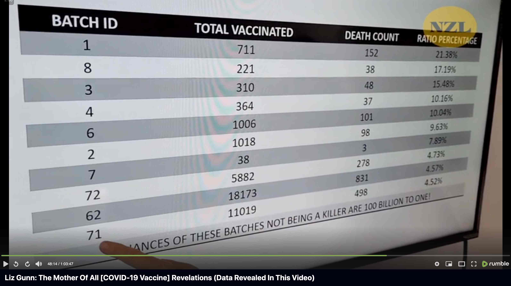
I noticed that the numbers in Young's table don't match the CSV file published by Kirsch, because for example batch 1 has a total of 711 doses in the table above but 4,386 doses in the CSV file. In the table above there's 5 different batches which have over 10% deaths, but in the CSV file there's only one batch with over 10% deaths:
$ awk -F, 'NR>1{n[$2]++;n2[$2][$1]}$5{d[$2]++;d2[$2][$1]}END{for(i in d)print i FS n[i]FS d[i]FS 100*d[i]/n[i]FS length(n2[i])FS length(d2[i])FS 100*length(d2[i])/length(n2[i])}' nz-record-level-data-4M-records.csv|sort -t, -rnk4|(echo batch,doses_given,doses_leading_to_deaths,doses_leading_to_deaths_pct,persons,deaths,deaths_per_person_pct;head)|column -ts,
batch doses doses_leading_to_death doses_leading_to_death_pct persons deaths deaths_per_person_pct
1 4386 674 15.3671 2979 375 12.5881
3 6213 317 5.10221 4875 264 5.41538
8 3986 203 5.09282 3774 193 5.11394
2 16627 754 4.53479 13518 596 4.40894
7 1288 56 4.34783 1232 51 4.13961
72 10624 356 3.3509 10622 356 3.35153
4 7111 237 3.33286 7015 233 3.32145
71 20325 620 3.05043 20276 619 3.05287
35 103143 3141 3.04529 102759 3129 3.04499
32 42178 1281 3.03713 41866 1277 3.05021
Some people received two doses from the same batch, so they are counted twice in columns 2-4 above but only once in columns 5-7, so for example there are 375 people who died after receiving batch 1, but many of them received two doses from batch 1 so there are 674 doses in batch 1 which led to a death. There are also a few patients who received 3 or 4 doses from the same batch but no patients who received 5 or more doses from the same batch.
Uncle John Returns figured out that people who later went on to have a subsequent dose were excluded from Young's table. [https://x.com/UncleJo46902375/status/1731625480527257928] You can almost reproduce the table if you sort the records by vaccination date and select only the newest record for each person (but for some reason there are small discrepancies in the number of deaths for some batches):
> t=read.csv("nz-record-level-data-4M-records.csv")
> t2=t
> for(i in grep("date",colnames(t2)))t2[,i]=as.Date(t2[,i],"%m-%d-%Y")
> t2=t2[rev(order(t2$date_time_of_service)),]
> t2=t2[!duplicated(t2$mrn),]
> d=as.data.frame(table(batch=t2$batch_id))
> colnames(d)[2]="doses"
> d$deaths=table(factor(t2$batch_id[!is.na(t2$date_of_death)],d$batch))
> d$pct=100*d$deaths/d$doses
> d=d[order(-d$pct),]
> head(d,10)|>print.data.frame(row.names=F)
batch doses deaths pct
1 711 152 21.378340
8 221 38 17.194570
3 310 48 15.483871
4 364 37 10.164835
6 1006 102 10.139165
2 1018 99 9.724951
7 38 3 7.894737
72 5882 280 4.760286
62 18173 834 4.589226
71 11019 504 4.573918
However Young's method exaggerates the percentage of deaths in the early batches, because a common reason why some person would only get a vaccine from batch 1 but not subsequent batches was that the person died before they could get more vaccine doses. And in Young's table, the seven batches with the highest percentage of deaths were all early batches with an ID below 10. It would probably be more accurate to use a "bucket" system where you would calculate deaths per person-years, and where you would include people who later got a dose from another batch under the person-years of the earlier batch until they got the next batch.
In his presentation Barry Young pointed out that in the 2010s, New Zealand had only a handful of days which had more than 120 deaths, such as during the Christchurch earthquake in 2011, but in 2021 and 2022 after COVID vaccines had been rolled out, there was a much higher number of days which had more than 120 deaths:
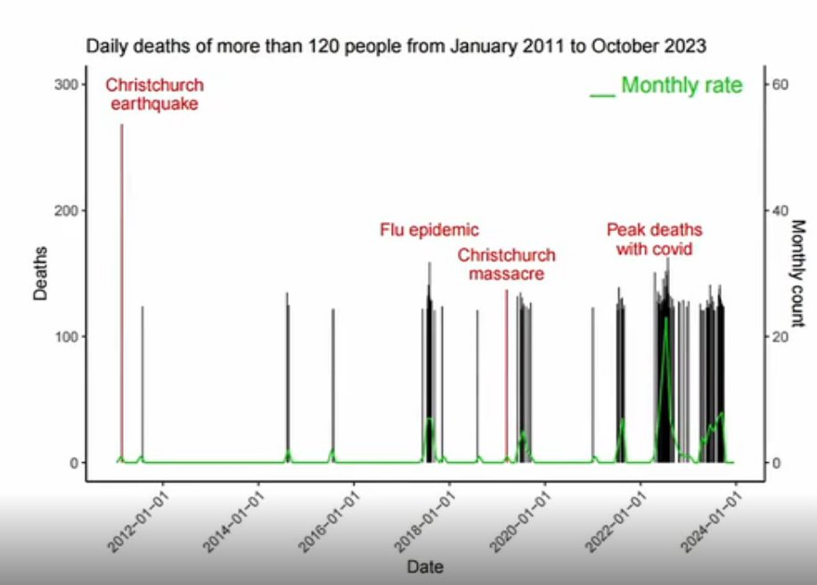
However according to the Short-Term Mortality Fluctuations dataset, the average number of deaths per day in New Zealand increased from about 83 in 2011 to about 94 in 2019:
> t=read.csv("https://www.mortality.org/File/GetDocument/Public/STMF/Outputs/NZL_NPstmfout.csv")
> t2=t[t$Sex=="b"&t$Year>=2011,]
> round(tapply(t2$Total,t2$Year,mean)/7,1)
2011 2012 2013 2014 2015 2016 2017 2018 2019 2020 2021 2022 2023
82.9 82.3 80.7 85.0 86.8 85.6 92.0 90.8 93.6 89.5 95.6 105.7 103.3
So therefore it would make more sense to use the linear trend in deaths before COVID as the baseline, and to then count how many days have a number of deaths that's more than a given threshold above the baseline. [https://x.com/UncleJo46902375/status/1730241561424732620] Below I calculated a linear trend for the data from 2011-2019, and I counted how many weeks each year had where the number of deaths was 2 or more standard deviations above the trend, where I got the standard deviation from the weekly difference to the trend in 2011-2019. But the number of weeks above the threshold was only 1 in 2021, because there were almost no COVID deaths in 2021:
> isoweek=\(year,week,weekday=1){d=as.Date(paste0(year,"-1-4"));d-(as.integer(format(d,"%w"))+6)%%7-1+7*(week-1)+weekday}
> xy=data.frame(x=isoweek(t2$Year,t2$Week,4),y=t2$Total)
> past=xy$x<as.Date("2020-1-1")
> model=predict(lm(y~x,xy[past,]),xy)
> diff=xy$y-model
> dates=xy$x[diff/sd(diff[past])>=2]
> dates
[1] "2011-02-24" "2011-08-18" "2011-09-08" "2012-07-12" "2012-07-19" "2015-07-30" "2015-08-06"
[8] "2015-08-13" "2017-07-20" "2017-07-27" "2017-08-03" "2017-08-10" "2019-07-11" "2021-08-12"
[15] "2022-05-12" "2022-05-26" "2022-06-16" "2022-06-23" "2022-06-30" "2022-07-07" "2022-07-14"
[22] "2022-07-21" "2022-07-28" "2022-08-04" "2022-08-18" "2023-08-24"
> table(factor(as.numeric(substr(dates,1,4)),2011:2023))
2011 2012 2013 2014 2015 2016 2017 2018 2019 2020 2021 2022 2023
3 2 0 0 3 0 4 0 1 0 1 11 1
Barry Young's presentation included this table which showed the vaccination sites with the highest percentage of deaths per dose: [https://rumble.com/v3ynskd-operation-m.o.a.r-mother-of-all-revelations.html]
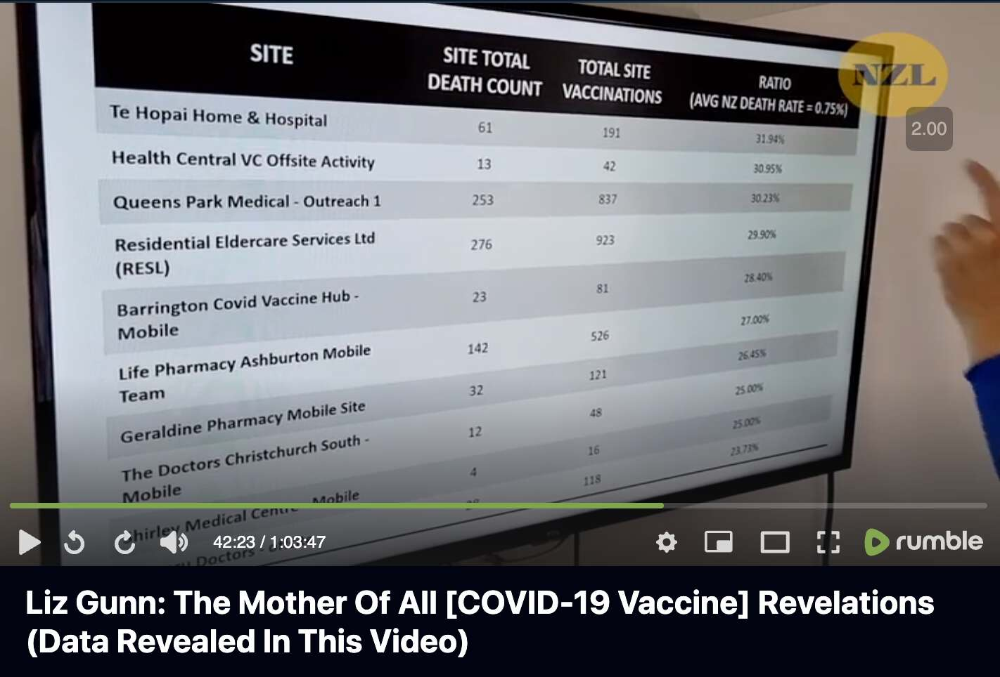
The vaccination site on the first row of the table is called "Te Hopai Home & Hospital", which has 191 vaccinations and 61 deaths which results in ratio of about 32% deaths per vaccination. I don't know if the number of vaccinations refers to the number of vaccine doses given or the number of vaccinated persons, or I don't know if Young excluded people who later went on to get subsequent vaccine doses from his table.
But in any case, The Hopai Home & Hospital is a nursing home. [https://www.tehopai.co.nz/] The dataset published by the whistleblower includes about two and half years of data, so over that period of time, it's not that unusual that about 30% of vaccine doses in a nursing home would've been given to people who are now dead. Even though actually someone posted a Substack comment which said: "Te Hopai was a vaccination centre for the public, not just aged care residents. Teenagers got jabs there so you are being very misleading here." [https://www.igor-chudov.com/p/i-analyzed-the-leaked-nz-whistleblower/comment/44717804]
It might make more sense to calculate an age-standardized mortality rate per vaccination site, but the files published by Kirsch don't include data about the vaccination sites. Different sites are also going to have different average dates of vaccination, and people who were vaccinated in 2021 have had more time to die since vaccination than people who were vaccinated in 2023.
New Zealand had almost no COVID deaths until 2022 so there was also low excess mortality until 2022. And around August to September 2021 when the daily number of new vaccine doses peaked, there was negative excess mortality (at least if you look at seasonality-adjusted excess CMR like in my plot below): [R code]
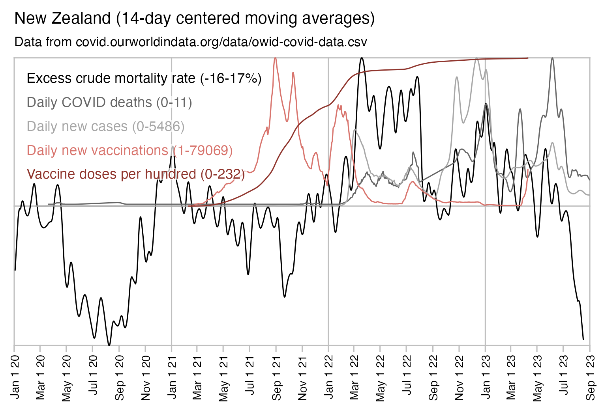
In the presentation that Kirsch gave at MIT, he included the following slide which made it seem like there may have already been high excess mortality in 2021 since the year labeled 2021/2022 had high excess mortality, but couldn't tell from the slide that it took about a year after vaccination started until there was the first clear increase in excess mortality: [https://www.skirsch.com/covid/Isitsafe.pdf]
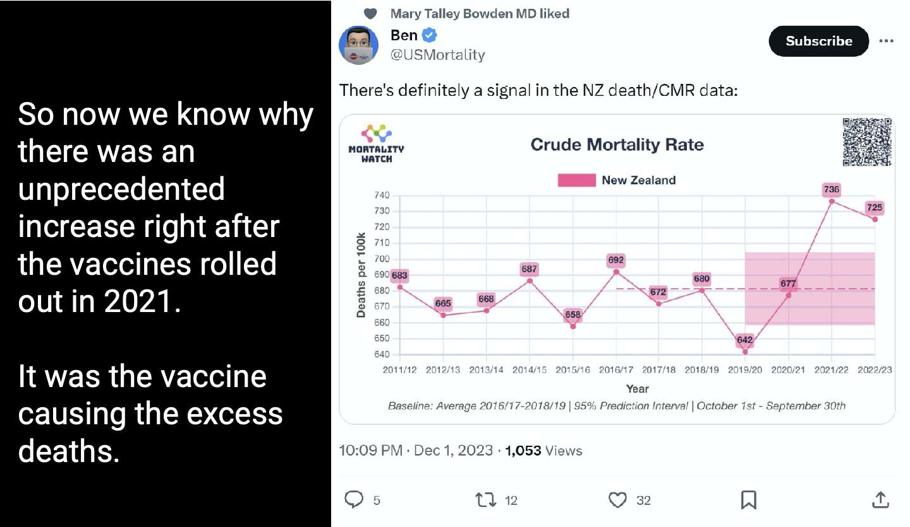
Kirsch's presentation at MIT also included the following slides where he compared New Zealand to the Philippines:
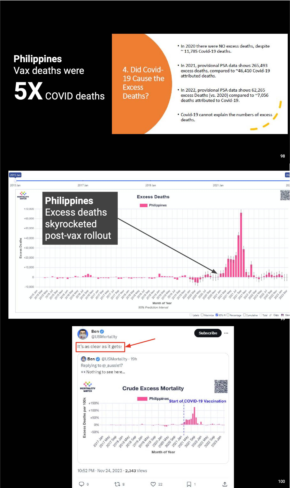
Kirsch pointed out that in 2020 Philippines had a fairly high number of COVID deaths but close to 0% excess mortality. But that's because there was negative excess mortality in the first half of 2020, and actually there was a clear increase in excess mortality from around April until August 2020 which paralleled an increase in COVID deaths. Kirsch also pointed out that the number of excess deaths in 2021 was about 7 times higher than the number of COVID deaths. But in developing countries it's common for COVID deaths to not be classified as COVID, and actually the spikes in excess deaths coincided with spikes in COVID deaths and PCR positivity rate, and there was even a dip in excess mortality around November 2022 when there was a peak in the daily number of new vaccine doses:
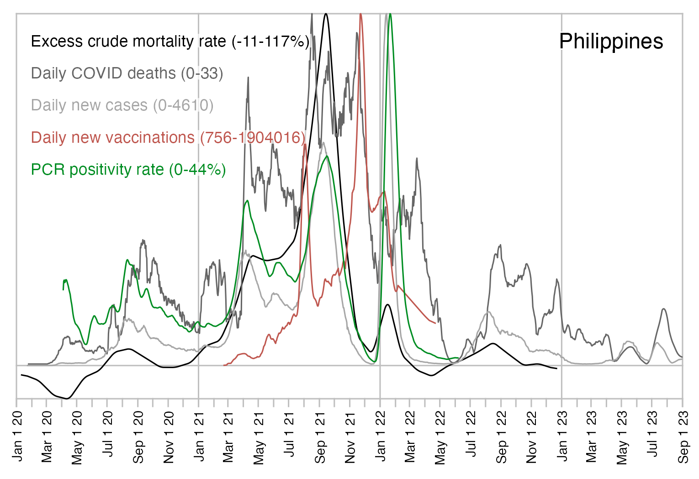
In the CSV file that was published by Kirsch, there are only 7 records where the date of death is the same as the date of vaccination, so that the time from vaccination to death was zero days. And there's also a low number of records where the date of death is within a week from a vaccination, which might be explained by the healthy vaccinee effect if people who are at immediate risk of death don't get vaccinated:
> t=read.csv("nz-record-level-data-4M-records.csv")
> t2=t[t$date_of_death!="",]
> ta=table(as.Date(t2$date_of_death,"%m-%d-%Y")-as.Date(t2$date_time_of_service,"%m-%d-%Y"))
> head(ta,100)
-106 -22 -3 -2 0 1 2 3 4 5 6 7 8 9 10 11 12 13 14 15
1 1 1 1 7 46 40 55 74 59 79 70 78 74 80 89 98 82 91 86
16 17 18 19 20 21 22 23 24 25 26 27 28 29 30 31 32 33 34 35
100 83 89 96 98 106 122 92 96 99 98 115 83 105 109 92 123 104 118 102
36 37 38 39 40 41 42 43 44 45 46 47 48 49 50 51 52 53 54 55
116 89 108 122 103 107 110 110 125 109 114 99 111 117 119 110 109 115 113 126
56 57 58 59 60 61 62 63 64 65 66 67 68 69 70 71 72 73 74 75
126 122 113 119 118 114 115 102 140 138 137 116 140 112 131 118 110 135 113 124
76 77 78 79 80 81 82 83 84 85 86 87 88 89 90 91 92 93 94 95
122 122 124 116 133 127 114 110 132 142 109 130 134 127 124 127 142 133 134 138
There's 4 records where the date of death is earlier than the date of vaccination, but they may be the result of errors in data entry. The most common durations from vaccination to death are 100 and 170 days which are on shared first place:
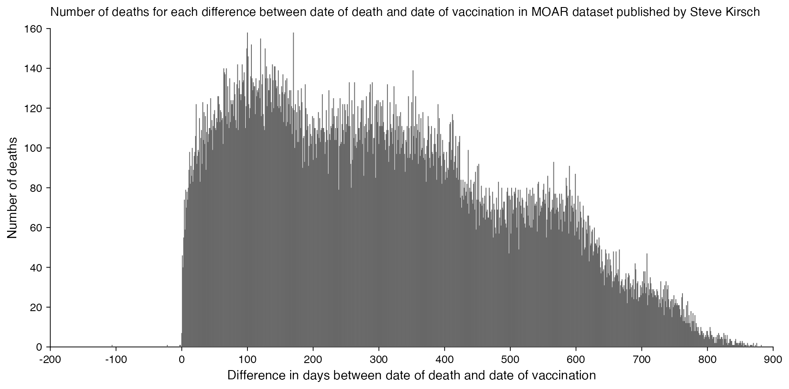
It seems unusual that there were only 7 deaths which occurred on the same day as a vaccination. In 2021 to 2023, the average number of deaths per day in New Zealand was about 101, and even if Young's dataset would only include about a third of all vaccination records, a third of 101 would would still be about 34. Even though I guess if people got vaccinated during the working day, then the average time of day when people got vaccinated might be after midday, and if someone died at 4 AM then they probably weren't vaccinated the same day. And the dataset is also missing deaths among unvaccinated people.
The earliest date of vaccination in the dataset is on April 18th 2021, and the number of missing vaccination doses is disproportionately high in the first half of 2021. The last date of death is on October 27th 2023. So in the histogram above, the number of deaths tapers off at the end of the x-axis and there is only a small number of deaths that occurred more than 800 days after a vaccination, but that's because the dataset only includes a small number of people who were vaccinated early enough that it was possible for them to die more than 800 days from the vaccination.
R code:
library(ggplot2)
t=read.csv("nz-record-level-data-4M-records.csv")
t2=t[t$date_of_death!="",]
ta=table(as.Date(t2$date_of_death,"%m-%d-%Y")-as.Date(t2$date_time_of_service,"%m-%d-%Y"))
xy=data.frame(x=as.numeric(names(ta)),y=as.numeric(ta))
candidates=c(sapply(c(1,2,5),\(x)x*10^c(-10:10)))
xstep=candidates[which.min(abs(candidates-max(xy$x)/11))]
ystep=candidates[which.min(abs(candidates-max(xy$y)/6))]
xstart=xstep*floor(min(xy$x)/xstep)
xend=xstep*ceiling(max(xy$x)/xstep)
ystart=ystep*floor(min(xy$y)/ystep)
yend=ystep*ceiling(max(xy$y)/ystep)
xbreak=seq(xstart,xend,xstep)
ybreak=seq(ystart,yend,ystep)
ggplot(xy,aes(x,y))+
geom_hline(yintercept=ystart,color="black",linewidth=.2,lineend="square")+
geom_vline(xintercept=xstart,color="black",linewidth=.2,lineend="square")+
geom_point(size=.2)+
scale_x_continuous(limits=c(xstart,xend),breaks=xbreak,expand=c(0,0))+
scale_y_continuous(limits=c(ystart,yend),breaks=ybreak,expand=c(0,0))+
coord_cartesian(clip="off")+
labs(x="Difference in days between date of death and date of vaccination",y="Number of deaths",title="Number of deaths for each difference between date of death and date of vaccination in MOAR dataset")+
theme(
axis.text=element_text(size=6,color="black"),
axis.ticks=element_line(linewidth=.2,color="black"),
axis.ticks.length=unit(.15,"lines"),
axis.title=element_text(size=7),
legend.position="none",
panel.background=element_rect(fill="white"),
panel.grid=element_blank(),
plot.background=element_rect(fill="white"),
plot.margin=margin(.4,.5,.4,.5,"lines"),
plot.subtitle=element_text(size=6),
plot.title=element_text(size=6.8)
)
ggsave("1.png",width=6,height=3)
The number of deaths peaks at about 100 days after vaccination when all doses are aggregated together, but the number of deaths peaks at about 300 days for the first two doses, and the first two doses are underrepresented in the dataset. The number of deaths peaks at about 100 days for the fifth dose, after which it falls to zero at around 200 days, because there were almost no fifth doses given before March 2023 which is about 200 days before the end of the data, but if the data extended further into the future, then the peak in deaths after the fifth dose might occur later. The fifth dose overrepresented in Young's dataset relative to earlier doses, because the proportion of missing doses is lower for newer doses and higher for earlier doses, but if there would be no missing doses in the dataset, then the peak in deaths for all doses aggregated together might occur more than 100 days after vaccination:
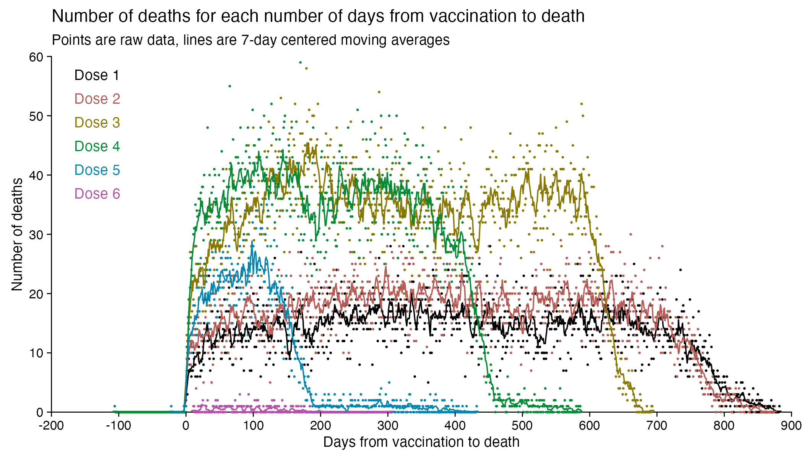
In fact if you simply omit all vaccine doses given in 2023, then almost all fifth doses are omitted, so the peak in deaths for all doses aggregated together is about 300 days after vaccination:
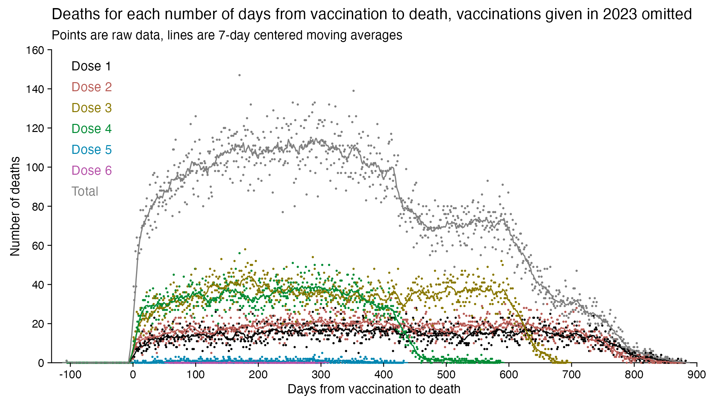
In the plots above I included all doses a person received, but if I would've only included the last dose before death, then the average time from vaccination until death would've been lower.
In the plot below I included vaccinations which were given at least 51 weeks before the last death in the dataset, and I only included deaths that happened within 51 weeks from vaccination, so now the number of deaths no longer tapers off at the end of the x-axis:
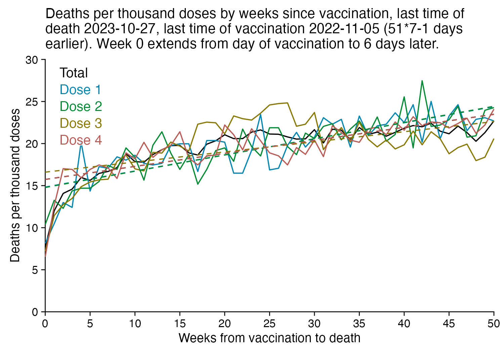
In the plot above there's a period around weeks 15-30 where dose 3 is fairly far above the trend line, which may have been caused by the wave of COVID deaths in 2022, because most third doses were given around November 2021 to March 2022. But afterwards the line for dose 3 goes below the trend line, which might be because of a pull forward effect or because there was a period of low overall mortality in late 2022.
I'm not sure why there the plot above has an increasing trend in deaths over time, but there's a couple of reasons I can think:
The plot below is otherwise the same as my previous plot but I only included the most recent dose listed for each person. Now dose 1 includes atypical people who didn't get a subsequent dose after the first dose, which is commonly because the people died before they could get further shots, so dose 1 has a large number of deaths for the first few weeks after vaccination:
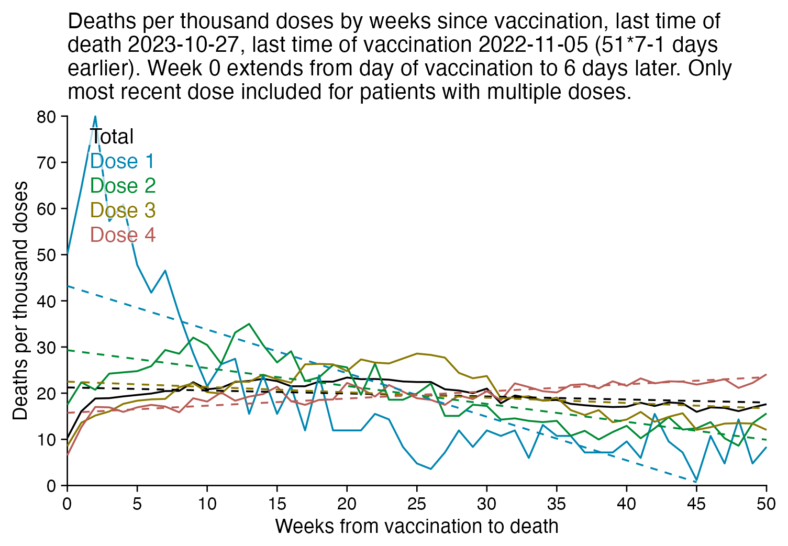
R code:
library(ggplot2)
t=as.data.frame(data.table::fread("nz-record-level-data-4M-records.csv")) # this is faster than `read.csv`
for(i in grep("date",colnames(t)))t[,i]=as.Date(t[,i],"%m-%d-%Y")
weeks=51
date1=max(t$date_of_death,na.rm=T)
date2=date1-weeks*7+1
t=t[t$date_time_of_service<=date2,]
t=t[t$date_time_of_service<=t$date_of_death,]
t=t[t$dose_number<=4,]
doses=table(t$dose_number)
t=t[t$date_of_death-t$date_time_of_service<weeks*7,]
## t=t[rev(order(t$date_time_of_service)),]
## t=t[!duplicated(t$mrn),]
t=t[!is.na(t$date_of_death),]
ta=as.data.frame(table(floor((t$date_of_death-t$date_time_of_service)/7),t$dose_number))
xy=data.frame(x=as.numeric(levels(ta$Var1)),y=c(ta$Freq/doses[ta$Var2]),z=paste0("Dose ",ta$Var2))
tap=tapply(ta$Freq,ta$Var1,sum)
xy=rbind(data.frame(x=as.numeric(names(tap)),y=tap/sum(doses),z="Total"),xy)
xy$y=1e3*xy$y
xy$z=factor(xy$z,unique(xy$z))
xy$a=split(xy,xy$z)|>lapply(\(i)lm(y~x,i)|>predict(i))|>unlist()
xstart=0
xend=weeks-1
xstep=5
candidates=c(sapply(c(1,2,5),\(x)x*10^c(-10:10)))
ystep=candidates[which.min(abs(candidates-max(xy$y)/6))]
ystart=0
yend=ystep*ceiling(max(xy$y)/ystep)
xbreak=seq(xstart,xend,xstep)
ybreak=seq(ystart,yend,ystep)
labels=data.frame(x=xstart+.03*(xend-xstart),y=seq(.97*yend,,-yend/15,nlevels(xy$z)),label=levels(xy$z))
color=c("black",hcl(c(210,120,60,0,300)+15,70,50))
ggplot(xy,aes(x,y))+
geom_hline(yintercept=ystart,color="black",linewidth=.3,lineend="square")+
geom_vline(xintercept=xstart,color="black",linewidth=.3,lineend="square")+
geom_line(aes(color=z),size=.4)+
geom_line(aes(y=a,color=z),linetype=2,size=.4)+
geom_label(data=labels,aes(x=x,y=y,label=label),fill=alpha("white",.7),label.r=unit(0,"lines"),label.padding=unit(.04,"lines"),label.size=0,color=color[1:nlevels(xy$z)],size=3.4,hjust=0,vjust=1)+
labs(x="Weeks from vaccination to death",y="Deaths per thousand doses",title=paste0("Deaths per thousand doses by weeks since vaccination, last time of death ",date1,", last time of vaccination ",date2," (",weeks,"*7-1 days earlier). Week 0 extends from day of vaccination to 6 days later. For people with multiple doses, all doses are included and not only the most recent dose.")|>stringr::str_wrap(70))+
coord_cartesian(clip="off")+
scale_x_continuous(limits=c(xstart,xend),breaks=xbreak,expand=c(0,0))+
scale_y_continuous(limits=c(ystart,yend),breaks=ybreak,expand=c(0,0))+
scale_color_manual(values=color)+
theme(
axis.text=element_text(size=8,color="black"),
axis.ticks=element_line(linewidth=.3,color="black"),
axis.ticks.length=unit(.2,"lines"),
axis.title=element_text(size=9),
legend.position="none",
panel.background=element_rect(fill="white"),
panel.grid=element_blank(),
plot.background=element_rect(fill="white"),
plot.margin=margin(.4,.5,.4,.5,"lines"),
plot.subtitle=element_text(size=9),
plot.title=element_text(size=10)
)
ggsave("1.png",width=5,height=3.5)
system("mogrify -trim -border 24 -bordercolor white 1.png")
Next I tried calculating a crude mortality rate for each dose so that I divided the number of deaths each week with the number of people who had received a dose that week. Now there was an increase in crude mortality rate of each dose after the sample size becomes small, which I though was probably because then a large part of the population consists of old or vulnerable people who received the dose the earliest. However when I also included the average age of dead persons in the plot, at the point when the cohort size went close to zero and mortality rate shot up, for some reason the age at death decreased for the 4th and 5th doses even though it increased for the first three does:
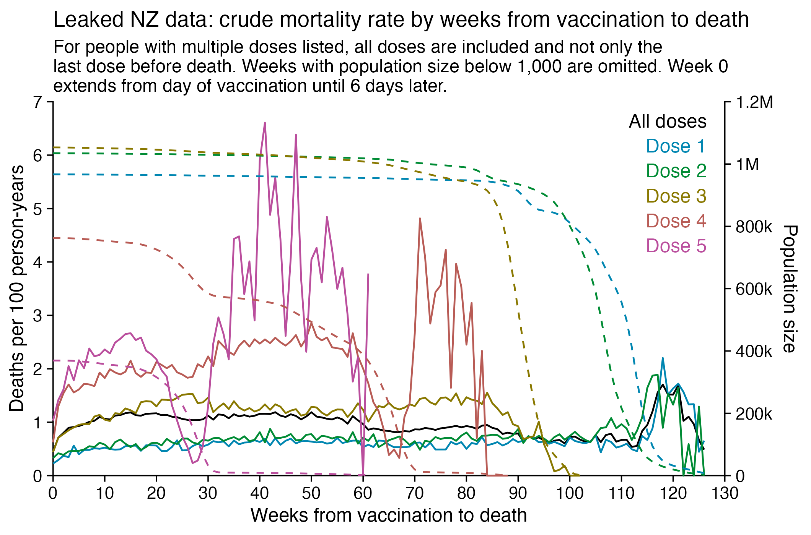
R code:
library(ggplot2)
t=as.data.frame(data.table::fread("nz-record-level-data-4M-records.csv")) # this is faster than `read.csv`
for(i in grep("date",colnames(t)))t[,i]=as.Date(t[,i],"%m-%d-%Y")
# t=t[rev(order(t$date_time_of_service)),]
# t=t[!duplicated(t$mrn),]
maxdose=5
maxdate=max(t$date_of_death,na.rm=T)
pop=table(floor((pmin(t$date_of_death,maxdate,na.rm=T)-t$date_time_of_service)/7),t$dose_number)|>apply(2,\(x)rev(cumsum(rev(x))))
doses=table(t$dose_number)
dead=t[!is.na(t$date_of_death),]
age=aggregate(as.numeric((dead$date_time_of_service-dead$date_of_birth)/365.2422),list(as.numeric(floor((dead$date_of_death-dead$date_time_of_service)/7)),dead$dose_number),mean)
death=floor((dead$date_of_death-dead$date_time_of_service)/7)|>table(dead$dose_number)|>as.data.frame()|>sapply(as.numeric)
death=merge(death,age,by=c(1,2),all=T)
death=death[death$Var2<=maxdose,]
pops=pop[cbind(as.character(death$Var1),as.character(death$Var2))]
xy=data.frame(x=death$Var1,y=death$Freq/pops,z=paste0("Dose ",death$Var2),pop=pops,age=death[,4])
ages=split(xy,xy$x)|>sapply(\(x)weighted.mean(x$age,x$pop,na.rm=T))
tap=tapply(death$Freq,factor(death$Var1,rownames(pop)),sum,na.rm=T)
xy=rbind(data.frame(x=as.numeric(names(tap)),y=tap/rowSums(pop),z="All doses",pop=rowSums(pop),age=ages[names(tap)]),xy)
xy$y=xy$y*365.2422/7*1e3
xy$z=factor(xy$z,sort(unique(xy$z)))
xy$y[xy$pop<1e3]=NA
xy=na.omit(xy)
xy$trend=split(xy,xy$z)|>lapply(\(i)predict(lm(y~x,i),i))|>unlist()
xy$pop[xy$z=="All doses"]=NA
xstart=0;xend=130;xstep=10
candidates=c(sapply(c(1,2,5),\(x)x*10^c(-10:10)))
ystep=candidates[which.min(abs(candidates-max(xy$y)/6))]
ystart=0
yend=ystep*ceiling(max(xy$y)/ystep)
yend=90
xbreak=seq(xstart,xend,xstep)
ybreak=seq(ystart,yend,ystep)
ystep2=candidates[which.min(abs(candidates-max(xy$pop,na.rm=T)/6))]
yend2=ceiling(max(xy$pop,na.rm=T)/ystep2)*ystep2
secmult=yend/yend2
xy=xy[sample(nrow(xy)),]
color=c("black",hcl(c(210,120,60,0,310,260)+15,70,50))
labels=data.frame(x=as.Date(xstart+.975*(xend-xstart),"1970-1-1"),y=seq(.97*yend,,-yend/15,nlevels(xy$z)),label=levels(xy$z))
kimi=\(x)ifelse(abs(x)>=1e6,paste0(x/1e6,"M"),ifelse(abs(x)>=1e3,paste0(x/1e3,"k"),x))
ggplot(xy,aes(x,y))+
geom_hline(yintercept=c(ystart),color="black",linewidth=.3,lineend="square")+
geom_vline(xintercept=c(xstart,xend),color="black",linewidth=.3,lineend="square")+
geom_line(aes(color=z),linewidth=.4)+
geom_point(aes(y=age,color=z),size=.4)+
geom_line(aes(y=pop*secmult,color=z),linewidth=.4,linetype=2)+
# geom_line(aes(y=trend,color=z),linetype=2,size=.4)+
geom_label(data=labels,aes(x=x,y=y,label=label),fill=alpha("white",.7),label.r=unit(0,"lines"),label.padding=unit(.04,"lines"),label.size=0,color=color[1:nlevels(xy$z)],size=3.2,hjust=1,vjust=1)+
labs(x="Weeks from vaccination to death",y="Deaths per 1,000 person-years (solid)\nAverage age at death (dots)",title="Leaked NZ data: crude mortality rate by weeks from vaccination to death",subtitle="For people with multiple doses, all doses are included and not only the last dose before death, so that a person who gets a subsequent dose also remains classified under previous doses. Weeks with cohort size below 1,000 are omitted. Week 0 extends from day of vaccination until 6 days later."|>stringr::str_wrap(84))+
coord_cartesian(clip="off")+
scale_x_continuous(limits=c(xstart,xend),breaks=xbreak,expand=c(0,0))+
scale_y_continuous(limits=c(ystart,yend),breaks=ybreak,expand=c(0,0),sec.axis=sec_axis(trans=~./secmult,breaks=seq(0,yend2,ystep2),name="Cohort size (dashed)",labels=kimi))+
scale_color_manual(values=color)+
theme(
axis.text=element_text(size=8,color="black"),
axis.ticks=element_line(linewidth=.3,color="black"),
axis.ticks.length=unit(.2,"lines"),
axis.title=element_text(size=9),
axis.title.y.right=element_text(margin=margin(0,0,0,5)),
legend.position="none",
panel.background=element_rect(fill="white"),
panel.grid=element_blank(),
plot.margin=margin(.3,.3,.3,.3,"lines"),
plot.subtitle=element_text(size=8.5,margin=margin(0,0,.4,0,"lines")),
plot.title=element_text(size=10.2,margin=margin(.2,0,.5,0,"lines"))
)
ggsave("1.png",width=5.3,height=3.5,dpi=400)
One of the files generated by the buckets.py script shows mortality by month, dose number, and weeks since vaccination:
$ wget -q https://getdatatransparency.com/data-transparency.zip $ unzip data-transparency.zip [...] $ sed 3q data-transparency/New\ Zealand/time-series\ summaries/month_dose_week_single_age.txt|column -t month dose week age alive dead 2021-01 0 0 1 248 0 2021-01 0 0 2 248 0
You can use the file to generate a plot for CMR by dose so that once a person has received a second dose, they are no longer included under the first dose. The plot shows that after around week 22 when the crude mortality rate of all doses begins to decrease, the average age of all doses also decreases. Kirsch said that the peak in mortality around weeks 20-25 was a sign of deaths caused by vaccines, but actually he should've calculated ASMR instead of CMR, or he should've stratified the CMR by age:
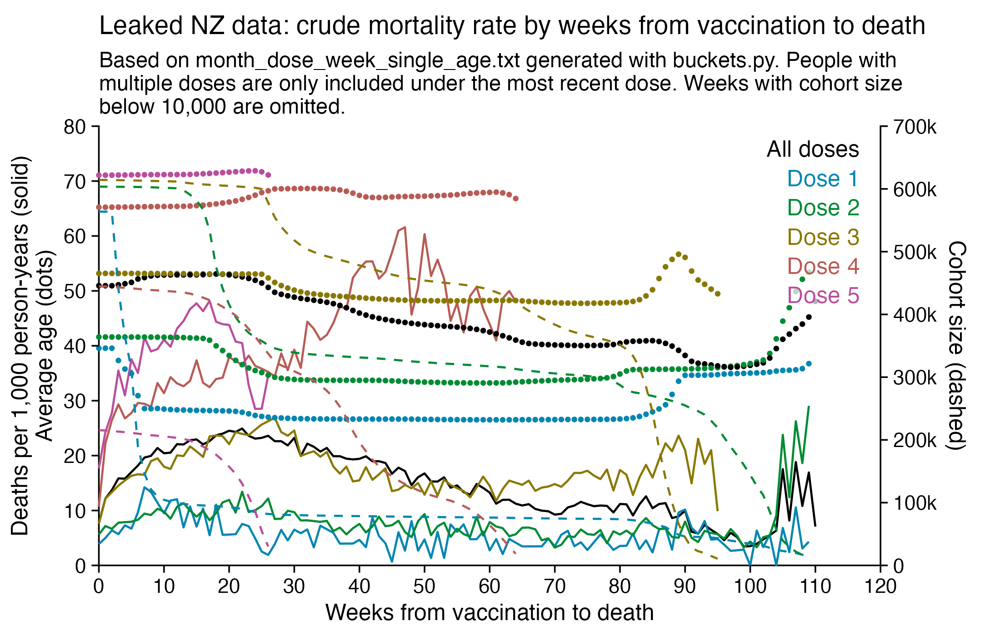
R code:
library(ggplot2)
t=read.table("data-transparency/New Zealand/time-series summaries/month_dose_week_single_age.txt",header=T)
ag=aggregate(t[,c(5,6)],t[,c(2:4)],sum)
ag=ag[ag$dose<=5&ag$dose>0,]
ag=merge(ag,aggregate(ag$alive,ag[,1:2],sum),by=1:2)
colnames(ag)[6]="allagepop"
xy=aggregate(ag[,c(4:5)],ag[,1:2],sum)
xy=merge(xy,aggregate(ag$age*ag$alive/ag$allagepop,ag[,c(1:2)],sum),by=1:2)
colnames(xy)[5]="age"
xy$dose=paste0("Dose ",xy$dose)
total=aggregate(ag[,4:5],ag[,"week",drop=F],sum)
total$dose="All doses"
total$age=tapply(ag$age*ag$alive,ag$week,sum)/tapply(ag$alive,ag$week,sum)
xy=rbind(total[,colnames(xy)],xy)
xy$alive=xy$alive/12
xy$cmr=xy$dead/xy$alive*365.2422/7*1e3
xy$dose=factor(xy$dose,unique(xy$dose))
minpop=1e4
xy$cmr[xy$alive<minpop]=NA
xy=na.omit(xy)
# xy$trend=split(xy,xy$dose)|>lapply(\(i)predict(lm(cmr~week,i),i))|>unlist()
xy$alive[xy$dose=="All doses"]=NA
xstart=0;xend=120;xstep=10
candidates=c(sapply(c(1,2,5),\(x)x*10^c(-10:10)))
ystep=candidates[which.min(abs(candidates-max(xy$cmr)/6))]
ystart=0
yend=ystep*ceiling(max(xy$cmr)/ystep)
xbreak=seq(xstart,xend,xstep)
ybreak=seq(ystart,yend,ystep)
# ystep2=candidates[which.min(abs(candidates-max(xy$alive,na.rm=T)/6))]
# yend2=ceiling(max(xy$alive,na.rm=T)/ystep2)*ystep2
# secmult=yend/yend2
xy=xy[sample(nrow(xy)),] # get random pattern of overlap between dots
color=c("black",hcl(c(210,120,60,0,310,260)+15,70,50))
labels=data.frame(x=as.Date(xstart+.975*(xend-xstart),"1970-1-1"),y=seq(.97*yend,,-yend/15,nlevels(xy$dose)),label=levels(xy$dose))
kimi=\(x)ifelse(abs(x)>=1e6,paste0(x/1e6,"M"),ifelse(abs(x)>=1e3,paste0(x/1e3,"k"),x))
ggplot(xy,aes(x=week,y=cmr))+
geom_hline(yintercept=ystart,color="black",linewidth=.3,lineend="square")+
geom_vline(xintercept=xstart,color="black",linewidth=.3,lineend="square")+
geom_line(aes(color=dose),linewidth=.4)+
geom_point(aes(y=age,color=dose),size=.4)+
geom_line(aes(y=alive/1e4,color=dose),linewidth=.4,linetype=2)+
# geom_line(aes(y=alive*secmult,color=dose),linewidth=.4,linetype=2)+
# geom_line(aes(y=trend,color=z),linetype=2,size=.4)+
geom_label(data=labels,aes(x=x,y=y,label=label),fill=alpha("white",.7),label.r=unit(0,"lines"),label.padding=unit(.04,"lines"),label.size=0,color=color[1:nlevels(xy$dose)],size=3.2,hjust=1,vjust=1)+
labs(x="Weeks from vaccination to death",y="Deaths per 1,000 person-years (solid)\nAverage age (dots)\nCohort size times 10,000 (dashed)",title="Leaked NZ data: crude mortality rate by weeks from vaccination to death",subtitle=paste0("Based on month_dose_week_single_age.txt generated with buckets.py. People with multiple doses are only included under the most recent dose. Weeks with cohort size below ",formatC(minpop,digits=0,format="f",big.mark=",")," are omitted.")|>stringr::str_wrap(84))+
coord_cartesian(clip="off")+
scale_x_continuous(limits=c(xstart,xend),breaks=xbreak,expand=c(0,0))+
scale_y_continuous(limits=c(ystart,yend),breaks=ybreak,expand=c(0,0))+
# scale_y_continuous(limits=c(ystart,yend),breaks=ybreak,expand=c(0,0),sec.axis=sec_axis(trans=~./secmult,breaks=seq(0,yend2,ystep2),name="Cohort size (dashed)",labels=kimi))+
scale_color_manual(values=color)+
theme(
axis.text=element_text(size=8,color="black"),
axis.ticks=element_line(linewidth=.3,color="black"),
axis.ticks.length=unit(.2,"lines"),
axis.title=element_text(size=9),
axis.title.y.right=element_text(margin=margin(0,0,0,5)),
legend.position="none",
panel.background=element_rect(fill="white"),
panel.grid=element_blank(),
plot.margin=margin(.3,.8,.3,.3,"lines"),
plot.subtitle=element_text(size=8.5,margin=margin(0,0,.4,0,"lines")),
plot.title=element_text(size=10.2,margin=margin(.2,0,.5,0,"lines"))
)
ggsave("1.png",width=5.5,height=3.5,dpi=400)
Compared to statistics for the daily number of new vaccine doses published by the New Zealand Ministry of Health, the proportion of doses that are missing from Young's dataset gets lower over time, so that the proportion is the highest in 2021 but the lowest in 2023: [https://github.com/minhealthnz/nz-covid-data/blob/main/vaccine-data/2023-05-03/doses_by_date.csv]
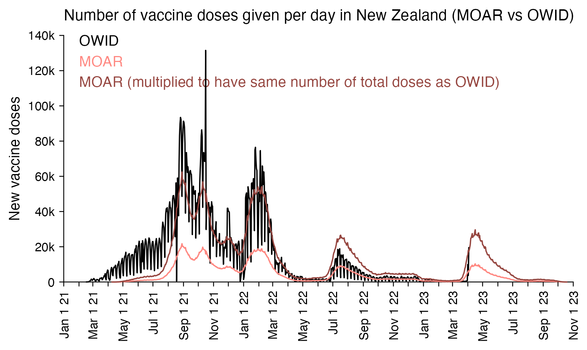
The plot above shows that the data from the MoH has regular dips in the number of vaccines given on weekends, but Young's dataset is missing the dips which makes it look like it might be a moving average of daily data. The MoH data also has a single-day spike in the number of vaccine doses given on October 16th 2021, but a similar spike is not visible in Young's data.
If you divide the average number of doses given on weekdays with the average number of doses given on weekends, the ratio is about 0.96 in Young's dataset, but the ratio is about 1.55 in the MoH data and about 1.53 at OWID:
> moar=read.csv("nz-record-level-data-4M-records.csv")
> ta=table(moar$date_time_of_service)
> weekend=format(as.Date(names(ta),"%m-%d-%Y"),"%u")>="6"
> mean(ta[!weekend])/mean(ta[weekend])
[1] 0.9575534
> moh=read.csv("https://github.com/minhealthnz/nz-covid-data/raw/main/vaccine-data/2023-05-03/doses_by_date.csv")
> s=rowSums(moh[,-1])
> weekend=format(as.Date(moh[,1]),"%u")>="6"
> mean(s[!weekend])/mean(s[weekend])
[1] 1.551969
> owid=read.csv("https://covid.ourworldindata.org/data/owid-covid-data.csv")
> weekend=format(as.Date(owid$date),"%u")>="6"
> mean(owid$new_vaccinations[!weekend],na.rm=T)/mean(owid$new_vaccinations[weekend],na.rm=T)
[1] 1.525399
I have thought of three possible explanations for the discrepancy in the weekend-weekday ratio, where I consider option 1 to be by far the most likely:
The data for the daily number of new vaccine doses at OWID is almost identical to a CSV file that was published on the GitHub account of the New Zealand Ministry of Health. On some days there's a difference of one or two doses. On the last week of data included at OWID, many days have a fairly large number of missing doses, which might be because there was a registration delay before new vaccination doses were added, because OWID only includes data up to April 4th but the file published by the Ministry of Health includes data up to May 2nd:
$ wget -q https://github.com/minhealthnz/nz-covid-data/raw/main/vaccine-data/2023-05-03/doses_by_date.csv
$ (gsed -u 1q;tail -n4)<doses_by_date.csv
Date,First doses,Second doses,Third primary doses,First Boosters,Second Boosters
2023-04-29,28,2695,0,127,2247
2023-04-30,12,632,0,49,774
2023-05-01,20,6551,10,177,3452
2023-05-02,18,7422,4,206,3788
$ awk 'NR==1||/New Zealand/' owid-covid-data.csv|csvtk cut -f date,new_vaccinations|awk -F, 'NR==FNR{a[$1]=$2;next}{x=0;for(i=2;i<=NF;i++)x+=$i;if(a[$1])print $1,x,a[$1]}' - <(sed 1d doses_by_date.csv)|tail -n20
2023-03-16 599 599.0
2023-03-17 536 536.0
2023-03-18 269 269.0
2023-03-19 111 111.0
2023-03-20 370 370.0
2023-03-21 486 484.0
2023-03-22 479 480.0
2023-03-23 481 479.0
2023-03-24 453 453.0
2023-03-25 329 328.0
2023-03-26 103 103.0
2023-03-27 424 424.0
2023-03-28 474 473.0
2023-03-29 509 505.0
2023-03-30 623 619.0
2023-03-31 800 793.0
2023-04-01 9958 9927.0
2023-04-02 3692 3685.0
2023-04-03 19746 19488.0
2023-04-04 20129 19733.0
At first I thought that the value of the age column indicated age on the date of vaccination, but the age is always the same in each entry for a patient, so for example the age of patient 1 is listed as 72 on rows for doses given in both 2021 and 2023:
$ awk 'NR==1||/^1,/' nz-record-level-data-4M-records.csv|csvtk pretty|sed 2d mrn batch_id dose_number date_time_of_service date_of_death vaccine_name date_of_birth age 1 1 2 07-24-2021 Pfizer BioNTech COVID-19 05-23-1951 72 1 1 1 06-19-2021 Pfizer BioNTech COVID-19 05-23-1951 72 1 104 5 05-07-2023 Pfizer Comirnaty Original/Omicron BA.4-5 15/15 mcg 05-23-1951 72
So the column for the age probably corresponds to the age of the patient on a certain date. In order to reverse engineer which date it was, for each day in the years 2020 to 2025, I checked how many patients had an age which matched the date of birth. I got the highest number of matches for December 1st 2023, the last date with non-zero matches was December 9th 2024, and the number of matches went linearly down to almost zero around November 30th 2022 when there's an inflection point, but after that it takes over a year until the number of matching dates goes to completely zero in August 2021. So basically the age column seems to correspond to the age around December 1st 2023, and the dates of birth seem to have been shifted by at most around 7-8 days backwards or forwards:
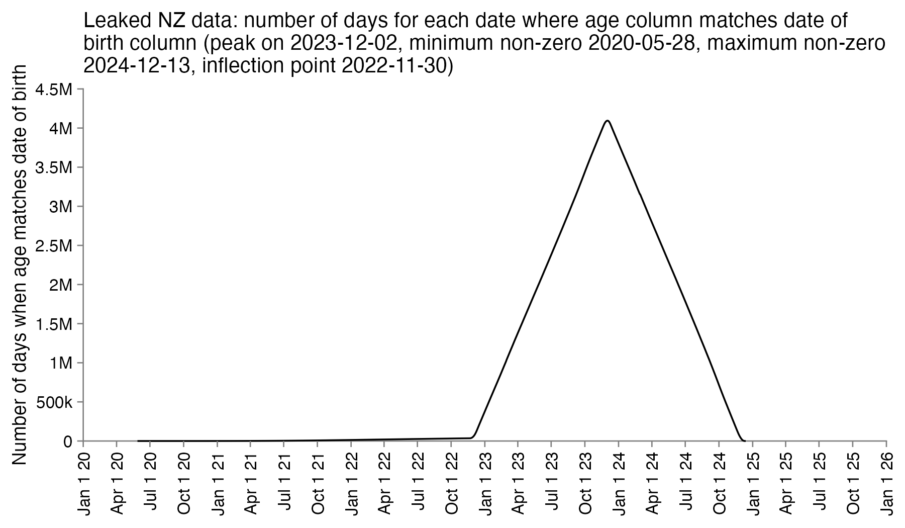
In an X Space where Kirsch was asked to describe the obfuscation procedure, he said: "The transformation is very unlikely to have shifted someone's data by over 30 days. It's very unlikely to have shifted someone's data by over 10 days." [https://twitter.com/stkirsch/status/1733531453978489209, time 19:31] So maybe the number of days is selected using a random variable with a normal distribution, so the maximum number of days can be even higher than 7 or 8. In fact when I repeated my procedure above but I checked all records instead of only the first 100,000 records, the peak date was on December 2nd 2023, and the maximum non-zero date was on December 11th 2024, so there may have been a single person who was born on November 30th or December 1st but whose birthday was shifted 11 or 10 days forwards (depending on whether the age column corresponds to the age on December 1st or 2nd).
Later Kirsch tweeted: "I've updated the data-transparency/New Zealand/code directory with the obfuscation algorithm we used on the Health New Zealand data. It's 3 lines of code. [...] essentially all dates are shifted by a non-zero random number picked from a normal distribution centered on zero." [https://twitter.com/stkirsch/status/1733655982843273357]
From the first plot below, you can see that there is a linear trend when the the number of days from vaccination to death is plotted against the day of vaccination. In April and May 2021, the average number of days from vaccination until death was below the linear trend, but it might be because the average age of dead vaccine recipients was higher in May 2021 than in subsequent months as you can see from the third plot below. Or alternatively it might be because there was a period of high excess mortality from March to July 2022, but there was a sudden drop in excess mortality in late July 2022.
In batch 1 which has by far the highest percentage of deaths per dose, the average age at death is 86 when rounded to the nearest integer, and the average age at vaccination is 66 for all recipients and 85 for dead recipients, and the average number of days between death and vaccination is about 403. The average age at vaccination among dead recipients is below 85 for all batches with an ID between 2 and 93, but in batch 94 and some newer batches, the average age at vaccination among dead recipients reaches above 85. But compared to batch 1, the newer batches were given much more recently, so they have a smaller percentage of deaths per dose because there's not as many people who have died of old age since vaccination:
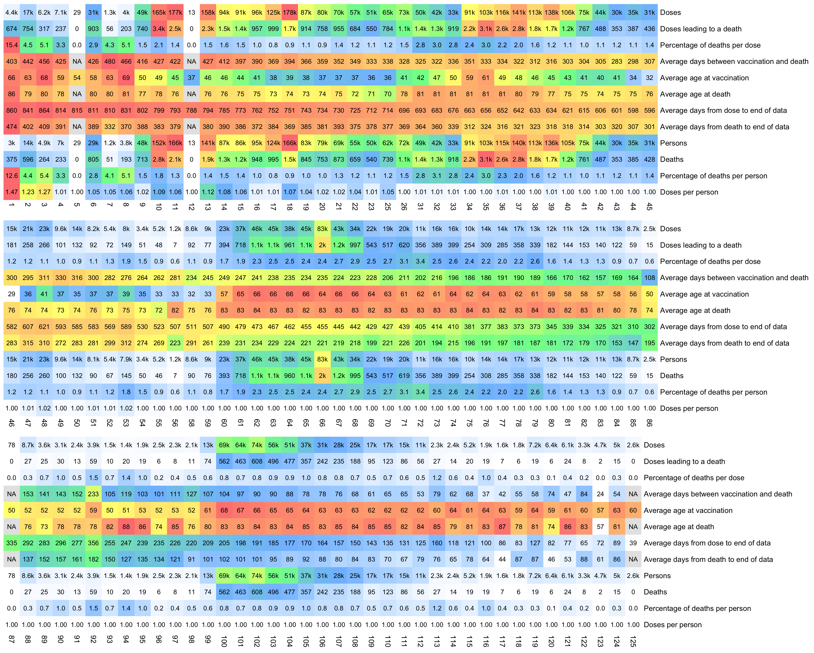
In the heatmap above, the end of data refers to October 27th 2023 which is the date of the last death included in the dataset. I calculated the person-years by calculating the time from a vaccine dose until either death or October 27th 2023, so that I included the time after a person got a subsequent dose as part of the person-years of earlier doses.
The first 9 rows in the heatmap above are per-dose but the last 4 rows are per-person. If a person got two doses from the same batch and died later, the person is counted twice on the row for doses leading to deaths. Batch 1 has the highest percentage of people who got 2 doses from the same batch, and the people who got 2 doses from batch 1 are more likely to have died later than the people who got only a single dose from batch 1, so in batch 1 the percentage of deaths per person is lower than the percentage of doses leading to deaths out of all doses.
R code:
t=as.data.frame(data.table::fread("nz-record-level-data-4M-records.csv")) # this is faster than `read.csv`
for(i in grep("date",colnames(t)))t[,i]=as.Date(t[,i],"%m-%d-%Y")
dead=t[!is.na(t$date_of_death),]
doses=table(t$batch_id)
fa=factor(dead$batch_id,names(doses))
persons=table(t$batch_id[!duplicated(t[,c("mrn","batch_id")])])
uniqdeaths=table(fa[!duplicated(dead[,c("mrn","batch_id")])])
deaths=table(fa)
maxdate=max(dead$date_of_death)
d=data.frame(Doses=c(doses))
d$`Doses leading to a death`=deaths
d$`Percentage of deaths per dose`=100*deaths/doses
d$`Deaths per 100 person-years`=deaths/(tapply(pmin(t$date_of_death,maxdate,na.rm=T)-t$date_time_of_service,t$batch_id,sum)/365.2422)*1e2
d$`Average days between vaccination and death`=tapply(dead$date_of_death-dead$date_time_of_service,fa,mean)
d$`Average age at vaccination`=tapply(t$date_time_of_service-t$date_of_birth,t$batch_id,mean)/365.2422
d$`Average age at death`=tapply(dead$date_of_death-dead$date_of_birth,fa,mean)/365.2422
# d$`Average age at vaccination for dead recipients`=tapply(dead$date_time_of_service-dead$date_of_birth,dead$batch_id,mean)/365.2422
d$`Average days from dose to end of data`=tapply(maxdate-t$date_time_of_service,t$batch_id,mean)
d$`Average days from death to end of data`=tapply(maxdate-dead$date_of_death,fa,mean)
d$`Persons`=persons
d$`Deaths`=uniqdeaths
d$`Percentage of deaths per person`=100*uniqdeaths/persons
d$`Doses per person`=doses/persons
m=t(apply(d,2,\(x)(x-min(x,na.rm=T))/(max(x,na.rm=T)-min(x,na.rm=T))))
kimir2=\(x){x[]=ifelse(or(x>=1e6,x<=-1e6),paste0(round(x/1e6,ifelse(abs(x)<1e7,1,0)),"M"),ifelse(or(x>=1e3,x<=-1e3),paste0(round(x/1e3,ifelse(abs(x)<1e4,1,0)),"k"),round(x)));x}
disp=kimir2(t(d))
disp[3,]=sprintf("%.1f",d[,3])
disp[4,]=sprintf("%.1f",d[,4])
disp[12,]=sprintf("%.1f",d[,12])
disp[13,]=sprintf("%.2f",d[,13])
slices=3
for(i in 1:slices){
step=ceiling(ncol(m)/slices)
start=(i-1)*step+1
end=min(start+step-1,ncol(m))
pheatmap::pheatmap(
m[,start:end],
filename=paste0("i",i,".png"),
cluster_rows=F,
cluster_cols=F,
legend=F,
cellwidth=20,
cellheight=20,
fontsize=9,
border_color=NA,
display_numbers=disp[,start:end],
fontsize_number=8,
number_color="black",
na_col="gray90",
breaks=seq(0,1,,256),
colorRampPalette(colorspace::hex(colorspace::HSV(c(210,210,130,60,40,20,0),c(0,.5,.5,.5,.5,.5,.5),1)))(256)
)
}
system("montage -geometry +0+0 -tile 1x i[123].png 1.png")
The plot below shows the average days from vaccination to death by average date of vaccination for each batch. Batch 1 is below the trend line as expected, because it has one of the highest average ages at death, but unexpectedly there are also a couple of batches that have a relatively young age at death but that are still below the trend line, like the batches with the IDs 17, 20, 21, 22, 23, and 25:
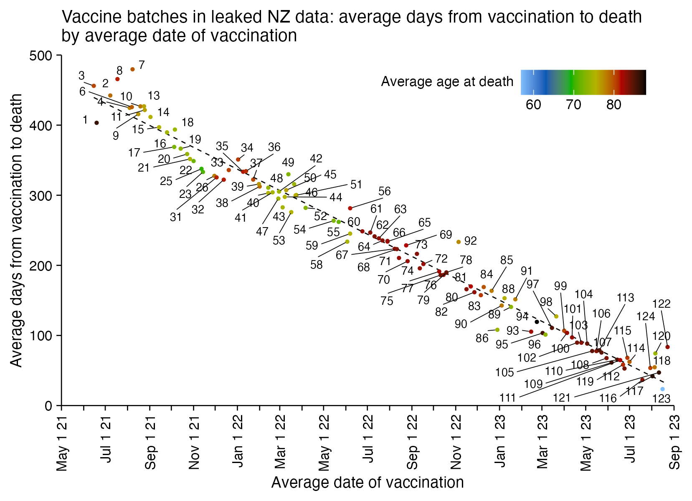
R code:
library(ggplot2)
t=as.data.frame(data.table::fread("nz-record-level-data-4M-records.csv")) # this is faster than `read.csv`
for(i in grep("date",colnames(t)))t[,i]=as.Date(t[,i],"%m-%d-%Y")
x=as.Date(round(tapply(t$date_time_of_service,t$batch_id,mean)),"1970-1-1")
t2=t[!is.na(t$date_of_death),]
y=tapply(t2$date_of_death-t2$date_time_of_service,t2$batch_id,mean)
z=tapply((t2$date_of_death-t2$date_of_birth)/365.2422,t2$batch_id,mean)[names(y)]
xy=data.frame(x=x[names(y)],y)
name=names(y)
xstart=as.Date("2021-5-1")
xend=as.Date("2023-9-1")
xbreak=seq(xstart,xend,"1 month")
xlab=xbreak|>format("%b 1 %y")
xlab[c(F,T)]=""
candidates=c(sapply(c(1,2,5),\(x)x*10^c(-10:10)))
ystep=candidates[which.min(abs(candidates-max(xy$y)/6))]
ystart=0
yend=ystep*ceiling(max(xy$y)/ystep)
ybreak=seq(ystart,yend,ystep)
ggplot(xy,aes(x,y))+
geom_smooth(method="lm",formula=y~x,linewidth=.3,se=F,color="black",linetype=2)+
geom_vline(xintercept=xstart,linewidth=.3)+
geom_hline(yintercept=0,linewidth=.3)+
geom_point(aes(color=z),size=.5)+
ggrepel::geom_text_repel(label=name,size=2.3,max.overlaps=Inf,segment.size=.2,min.segment.length=.2,force=10,force_pull=2,box.padding=.13)+
scale_x_date(limits=c(xstart,xend),breaks=xbreak,labels=xlab,expand=c(0,0))+
scale_y_continuous(limits=c(ystart,yend),breaks=ybreak,expand=c(0,0))+
scale_color_gradientn(colors=colorspace::hex(colorspace::HSV(c(210,210,120,60,0,0),c(.5,rep(1,5)),c(1,.7,.7,.7,.7,0))),name="Average age at death")+
coord_cartesian(clip="off")+
labs(title="Vaccine batches in leaked NZ data: average days from vaccination to death\nby average date of vaccination",x="Average date of vaccination",y="Average days from vaccination to death")+
theme(
axis.text=element_text(size=8,color="black"),
axis.text.x=element_text(angle=90,vjust=.5,hjust=1),
axis.ticks=element_line(linewidth=.3,color="black"),
axis.ticks.length=unit(.2,"lines"),
axis.title=element_text(size=9),
axis.title.x=element_text(margin=margin(4,0,0,0)),
legend.position=c(.97,.90),
legend.justification="right",
legend.direction="horizontal",
legend.key.width=unit(1,"lines"),
legend.key.height=unit(1,"lines"),
legend.spacing.y=unit(.05,"cm"),
legend.text=element_text(size=8,vjust=.5),
legend.title=element_text(size=8,vjust=.8),
panel.background=element_rect(fill="white"),
panel.grid=element_blank(),
plot.background=element_rect(fill="white"),
plot.margin=margin(.4,.5,.4,.5,"lines"),
plot.subtitle=element_text(size=9),
plot.title=element_text(size=10)
)
ggsave("1.png",width=5.5,height=4)
In the first 23 batches, the type of all vaccines is listed as "Pfizer BioNTech COVID-19", but later batches all contain a mixture of two or more vaccine types. However most vaccines in all batches are by Pfizer.
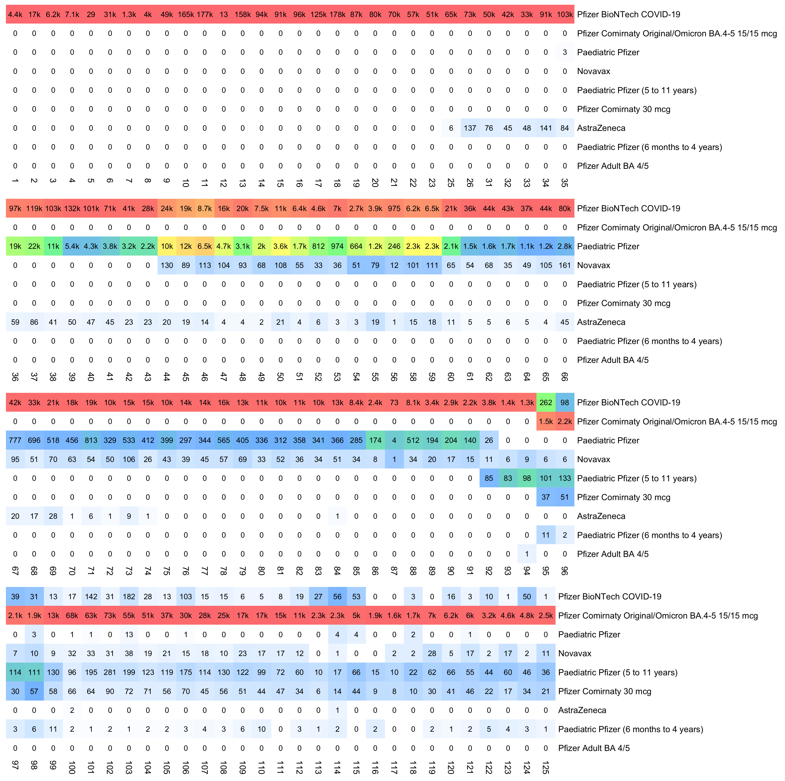
There's a FOIA response which includes a spreadsheet about Pfizer batch information. [https://fyi.org.nz/request/23334-per-batch-records-of-pfizer-covid-19-vaccine; search for xlsx] The code block below shows a CSV version of the second table from the spreadsheet. It might be possible to map some of the rarer vaccine types to Young's data, but it would be more difficult to map the batches with the type "Covid Adult Pfizer Original". There's three different batches with the type "Covid Adult Pfizer Original", with an expiration date on 2021-10-31, and with 49,140 doses. The batch IDs used by Barry Young don't seem to follow the same order as the batch numbers listed below. Young's data has 88 batches where the most common vaccine type is "Pfizer BioNTech COVID-19", but in the table below there's only 64 batches where the most common type is "Covid Adult Pfizer Original".
vaccine_type_name,batch_number,batch_expiry_date,doses_received_from_supplier Covid Adult Pfizer 15/15mcg Bivalent,GK1316,2024-02-29,348480 Covid Adult Pfizer 15/15mcg Bivalent,GK3907,2024-02-29,357120 Covid Adult Pfizer 15/15mcg Bivalent,GK3908,2024-02-29,1042560 Covid Adult Pfizer 30mcg Monovalent,FY4526,2023-08-31,1175040 Covid Adult Pfizer 30mcg Monovalent,HC8237,2024-09-30,14400 Covid Adult Pfizer Original,1F1028A,2022-09-30,210600 Covid Adult Pfizer Original,1F1043A,2023-01-31,140400 Covid Adult Pfizer Original,1F1045A,2022-07-31,19890 Covid Adult Pfizer Original,1F1047A,2022-10-31,43290 Covid Adult Pfizer Original,1F1059A,2023-02-28,77220 Covid Adult Pfizer Original,1K078A,2023-01-31,105300 Covid Adult Pfizer Original,1K080A,2023-01-31,189540 Covid Adult Pfizer Original,1L084A,2023-02-28,154440 Covid Adult Pfizer Original,35627TB,2023-02-28,77220 Covid Adult Pfizer Original,37726TB,2023-03-31,298350 Covid Adult Pfizer Original,8001016,2023-02-28,115830 Covid Adult Pfizer Original,8001749,2023-03-31,4680 Covid Adult Pfizer Original,EP2163,2021-05-31,65520 Covid Adult Pfizer Original,EP9605,2021-06-30,141570 Covid Adult Pfizer Original,ER7449,2021-06-30,118170 Covid Adult Pfizer Original,ET3045,2021-07-31,78390 Covid Adult Pfizer Original,ET9096,2021-07-31,186030 Covid Adult Pfizer Original,EX2405,2021-08-31,288990 Covid Adult Pfizer Original,FA5833,2021-09-30,100620 Covid Adult Pfizer Original,FC3558,2021-09-30,98280 Covid Adult Pfizer Original,FC5029,2021-10-31,150930 Covid Adult Pfizer Original,FD0927,2021-09-30,47970 Covid Adult Pfizer Original,FD9234,2021-10-31,49140 Covid Adult Pfizer Original,FE2090,2021-10-31,49140 Covid Adult Pfizer Original,FE3064,2021-10-31,49140 Covid Adult Pfizer Original,FE8163,2021-10-31,388440 Covid Adult Pfizer Original,FF2382,2021-12-31,645840 Covid Adult Pfizer Original,FF4206,2021-10-31,444600 Covid Adult Pfizer Original,FF4222,2021-10-31,530010 Covid Adult Pfizer Original,FF8871,2021-11-30,379080 Covid Adult Pfizer Original,FG0050,2021-11-30,358020 Covid Adult Pfizer Original,FG7372,2021-12-31,512460 Covid Adult Pfizer Original,FG9019,2021-12-31,250380 Covid Adult Pfizer Original,FH0114,2021-12-31,250380 Covid Adult Pfizer Original,FH3219,2022-01-31,300690 Covid Adult Pfizer Original,FH4091,2021-12-31,193050 Covid Adult Pfizer Original,FH4092,2021-12-31,129870 Covid Adult Pfizer Original,FH4752,2022-01-31,300690 Covid Adult Pfizer Original,FH9678,2021-12-31,274950 Covid Adult Pfizer Original,FJ8372,2021-12-31,421200 Covid Adult Pfizer Original,FK0115,2022-01-31,427050 Covid Adult Pfizer Original,FK0738,2022-06-30,266760 Covid Adult Pfizer Original,FK0892,2022-02-28,59670 Covid Adult Pfizer Original,FK6268,2022-02-28,19890 Covid Adult Pfizer Original,FK9414,2022-02-28,712530 Covid Adult Pfizer Original,FK9707,2022-06-30,168480 Covid Adult Pfizer Original,FL1072,2022-02-28,1498770 Covid Adult Pfizer Original,FL4210,2022-06-30,195390 Covid Adult Pfizer Original,FL5333,2022-02-28,101790 Covid Adult Pfizer Original,FL5729,2022-02-28,95940 Covid Adult Pfizer Original,FM4289,2022-06-30,336960 Covid Adult Pfizer Original,FM7532,2022-06-30,30420 Covid Adult Pfizer Original,FN4207,2022-09-30,585000 Covid Adult Pfizer Original,PCA0074,2023-02-28,328770 Covid Adult Pfizer Original,PCA0082,2023-03-31,226980 Covid Adult Pfizer Original,PCB0008,2022-12-31,451620 Covid Adult Pfizer Original,PCB0012,2023-01-31,624780 Covid Adult Pfizer Original,SDYX4,2023-03-31,81900 Covid Adult Pfizer Original,SDYY2,2023-03-31,2340 Covid Infant Pfizer,GP9809,2024-03-31,62400 Covid Paediatric Pfizer,FN4074,2023-04-30,166800 Covid Paediatric Pfizer,FP1430,2022-03-31,504000 Covid Paediatric Pfizer,FP8290,2023-04-30,192000 Covid Paediatric Pfizer,FP9643,2023-04-30,384000 Covid Paediatric Pfizer,FR4268,2022-11-30,4800 Covid Paediatric Pfizer,FW0201,2022-12-31,4800 Covid Paediatric Pfizer,FX8528,2023-08-31,249600 Covid Paediatric Pfizer,GE0694,2023-10-31,249600
Barry Young was interviewed by Liz Gunn, who used to be the host of three different shows on mainstream TV according to her IMDB profile. Aussie17 tweeted an early video of highlights from the interview, and he also posted an early Substack post about the video, but his Twitter bio says that he is a former executive in big pharma. So it sounds like the kind of cast of characters who are usually rolling out the Stew Peters psyops. Alex Jones compared the release of the New Zealand data to the release of Team Enigma's data two years earlier. But the first big presentations about Team Enigma's data were done by Latypova and Yeadon, who are both former executives in the pharmaceutical industry, and when Latypova did her presentation on the Stew Peters Show, she was interviewed by Stew Peters and Jane Ruby who both used to work in mainstream TV.
About 12 hours after the original "M.O.A.R." video was posted on Rumble, Aussie17 posted highlights of the video on Twitter and a Substack post about the video:
On November 30th UTC Liz Gunn published a second interview with Barry Young, which also featured Andrew Brigden who is a member of the British parliament. [https://rumble.com/v3ywe8p-andrew-bridgen-on-the-m%6do%6da%6dr%6d-data.html] On December 4th UTC, Brigden hosted an event where speeches in front of members of the UK parliament were presented by Kirsch, Robert Malone, David Martin, Pierre Kory, Ryan Cole, and Angush Dalgleish, and the event also featured remote presentations by Mike Yeadon and Peter McCullough. [https://saveoursovereignty.co.uk/] Aussie17 published transcripts of the presentations by Yeadon and Malone. [https://www.aussie17.com/p/important-dr-mike-yeadons-address, https://www.aussie17.com/p/important-dr-robert-malones-address] People on Twitter were saying that the event was a glowie festival. David Martin is now saying that viruses are not real, DNA is not real, and atoms are not real, and his old bio said that he has served as an advisor to allied intelligence agencies. [novirus.html#David_Martin_and_Sacha_Stone] Yeadon said that he worked under military clearance at Porton Down, and in late 2022 he started to push a similar no-virus-lite theory as Latypova and Kingston who are both linked to Pfizer, and they all started to say that gain-of-function research cannot produce viruses that cause pandemics. [pfizerstew.html] Mark Kulacz from Housatonic Live has done a lot of research on Malone. [https://housatonic.substack.com/p/can-robert-malone-help-us-identify] Ryan Cole is pushing the Stew Peters psyop about the kalamari clots, and he said that a blood clot in a photo from 2018 came from someone who had a COVID vaccine. [https://twitter.com/wideawake_media/status/1732684346220261698, https://twitter.com/Standup%5f%5fMan/status/1732952837733146774] (Jane Ruby brags that she was the first to break the story about the kalamari clots in January 2022, but if the clots are caused by the vaccines then why was the story breaking news more than a year after the jabs had been rolled out? The same team which made the film about the kalamari clots also made a film which said that COVID is caused by snake venom in tap water.)
However one factor that makes Young's data seem more authentic is that several people have said that they had been offered the data before it was published by Kirsch. A health freedom organization from New Zealand issued a statement which said: [https://www.voicesforfreedom.co.nz/blog/whistle-blower-data-release/]
The whistleblower contacted us a couple of years ago. We kept in touch, and he wanted to wait until he had a more substantial data set. We checked in periodically and had a legal team and investigative journalist ready to tackle the story in 2021. Despite this, he was not ready to speak up.
It turns out that VFF was one of a number of organisations contacted by the whistleblower over the past two years. In fact, one organisation worked for eight months with the whistleblower in 2022/23, investing time, money, and travel on devising an arrangement for him to send the data set to independent data analysts overseas.
Against that backdrop, out of the blue, the whistleblower told Liz Gunn about the data in the hope that she would be able to help through Parliamentary privilege. Of course that was dependent on Liz being successfully elected to government, which did not eventuate. Instead, Liz put out a teaser video against the whistleblower's wishes, which undercut entirely the organisation he'd been working with.
The whistleblower told us he was disappointed with this action and asked for our help to make contact with a specific influential team overseas.
Nick Hudson from PANDA also tweeted: "I was a recipient of the original data drop and part of a group asking questions about it. We more or less concluded that little could be concluded from it, and the discussion withered on the vine." [https://x.com/NickHudsonCT/status/1730604785441628599]
Guy Hatchard wrote: "I write extensively in NZ at HatchardReport.com and GLOBE.GLOBAL. The data set has been offered to a number of people in NZ over the last couple of years but not taken up apparently because of the difficulties you point out including age bias, sorting out a clean and reliable set, and access to whole source. It wasn't offered to myself." [https://www.igor-chudov.com/p/i-analyzed-the-leaked-nz-whistleblower/comment/44668599]
Kirsch has said that he was next going to publish a similar set of "record-level data" from Israel and another set of record-level Medicare data from the United States. So at first I was wondering why he got access to similar record-level data from three different countries around the same time. But then I found that in February 2023, Kirsch wrote a Substack post where he requested people to release record-level vaccination data, and he even provided instructions on how to format and obfuscate the data, which matches the format and obfuscation method of the CSV file for Young's data: [https://kirschsubstack.com/p/a-worldwide-call-for-data-transparency]
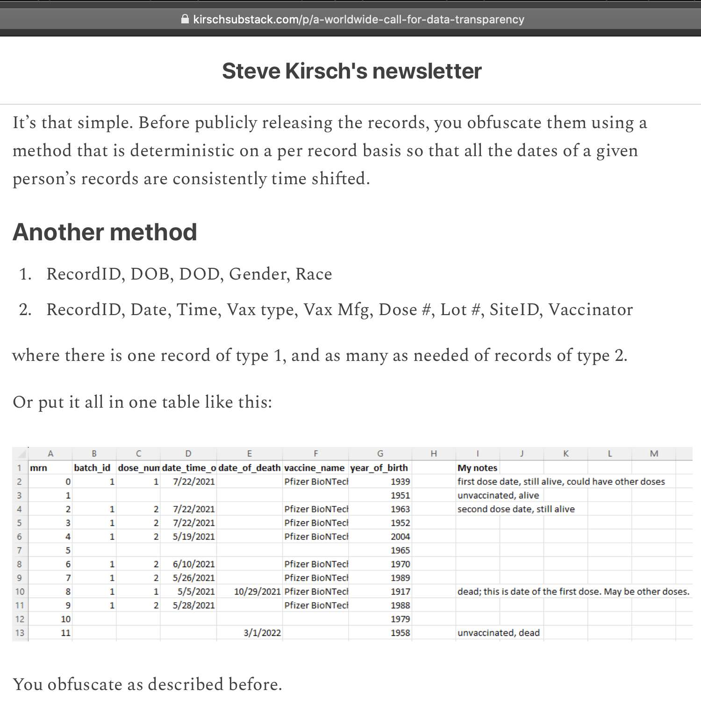
Kirsch did a calculation where he got about 10,000 excess deaths in New Zealand in 2021-2023: [https://x.com/stkirsch/status/1731236564624097322]
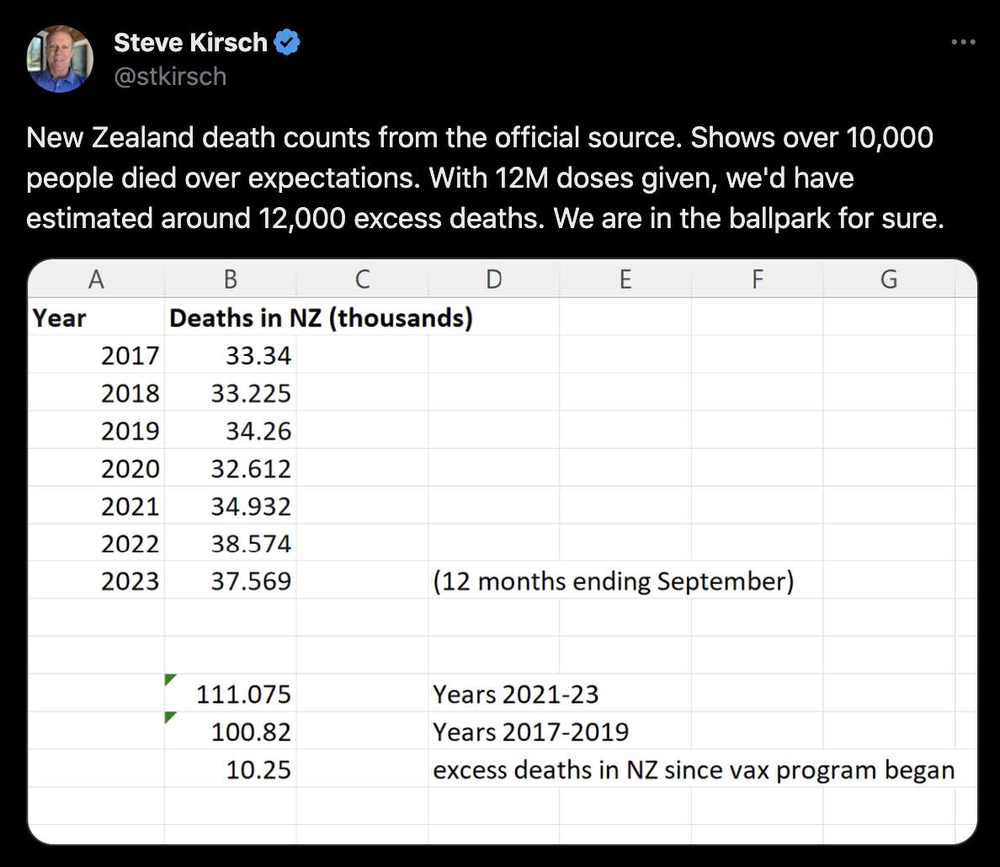
Kirsch substituted the period from October 2022 to September 2023 for the year 2023, but you can tell that he used regular years for the other years because his number of deaths in 2021 and 2022 is identical to figures published by the New Zealand government. However when Kirsch calculated the total excess mortality in 2021-2023, he counted the period from October to December 2022 twice, and it happened to be a period with fairly high excess mortality. So to avoid counting the period twice, I used years that ended in September for each year in my analysis below.
Another flaw in Kirsch's analysis is that he used the average number of deaths in 2017-2019 as the baseline, which exaggerates excess mortality because New Zealand has an increasing trend in the number of deaths per year. When I used the linear trend in 2012-2019 as the baseline instead, and I used years that started in October and ended in September for each year, I got only about 2,600 excess deaths from October 2020 to September 2023:
> t=read.csv("https://www.mortality.org/File/GetDocument/Public/STMF/Outputs/NZL_NPstmfout.csv")
> t=t[t$Sex=="b",]
> isoweek=\(year,week,weekday=1){d=as.Date(paste0(year,"-1-7"));d-(as.integer(format(d,"%w"))+6)%%7-1+7*(week-1)+weekday}
> xy=data.frame(x=isoweek(t$Year,t$Week,4),y=t$Total/7)
> xy=rbind(xy,data.frame(x=seq(min(xy$x),max(xy$x),1),y=NA))
> xy=xy[!duplicated(xy$x),]
> xy=xy[order(xy$x),]
> xy$y=zoo::na.approx(xy$y)
> starts=grep("-10-01",xy$x)
> d=data.frame(year_ending_september=2012:2023,deaths=cbind(head(starts,-1),starts[-1]+1)|>apply(1,\(x)sum(xy$y[x[1]:x[2]])))
> d$model=predict(lm(deaths~year_ending_september,head(d,8)),d)
> d$excess=d$deaths-d$model
> print.data.frame(round(d),row.names=F)
year_ending_september deaths model excess
2012 30330 29696 634
2013 29850 30325 -475
2014 30479 30955 -476
2015 32039 31584 455
2016 31409 32214 -805
2017 33636 32843 793
2018 33267 33473 -205
2019 34181 34102 79
2020 32822 34732 -1910
2021 34813 35361 -548
2022 38070 35991 2079
2023 37691 36620 1070
> sum(tail(d$excess,3))
[1] 2601.491
Thinking Slow got about 10,400 excess deaths from January 2020 to June 2023, but he also used the 2015-2019 average as the baseline, even though he used a different baseline for each month so that for example he used the average of each January in 2015-2019 as the baseline for January. [https://twitter.com/ThinkingSlow1/status/1732606827731321215] Below I first calculated a linear trend in deaths in 2015-2019, and then I adjusted it for seasonality so that for each 366 days of the year, I calculated the average difference from the trend during the day and I added the difference to my trend for all years. But I got about negative 1,700 excess deaths in the period between January 1st 2020 and October 29th 2023:
> prediction=xy$x<="2019-12-31"&xy$x>="2015-01-01" > linear=predict(lm(y~x,xy[prediction,]),xy) > days=substr(xy$x,6,10) > daily=tapply(xy$y[prediction]-linear[prediction],days[prediction],mean) > seasonal=linear+daily[days] > sum((xy$y-seasonal)[xy$x>="2020-01-01"&xy$x<="2020-06-30"]) [1] -1732.31
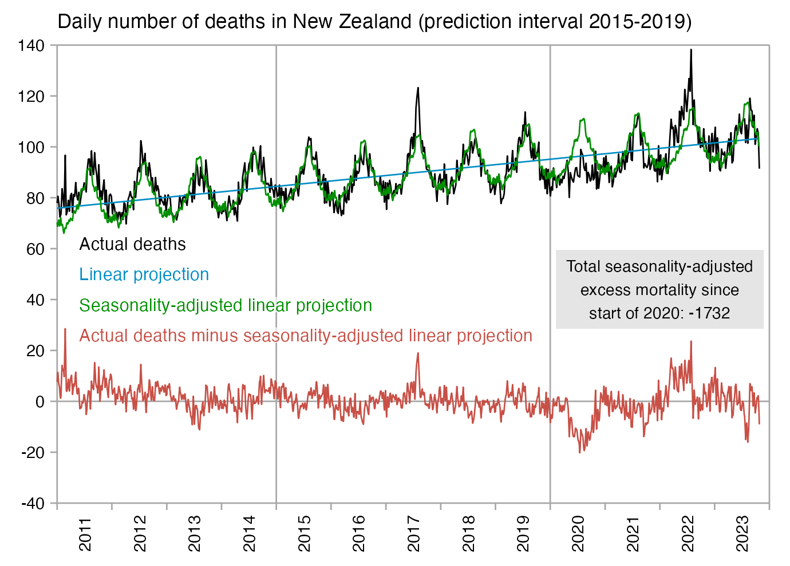
Clare Craig said that the number of COVID deaths in New Zealand was listed as 3,347 at the end of September 2023, but she posted a plot by USMortality which showed that there were 9,408 excess deaths from October 2020 to September 2023: [https://x.com/ClareCraigPath/status/1731703232727036207]
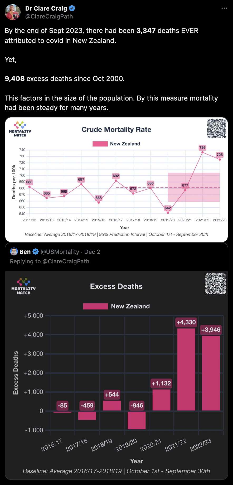
However USMortality used the 2016/2017 to 2018/2019 average as the baseline, which exaggerates excess mortality because New Zealand has an increasing trend in deaths per year. When I used years that started in October and ended in September like USMortality, but I used a linear regression from 2012/2013 to 2018/2019 as the baseline, I only got 1,403 excess deaths from October 2020 to September 2023: [https://next.mortality.watch/explorer/?c=NZL&t=deaths&df=2013/14&dt=2022/23&bf=2013/14&bt=2018/19&bm=linear_regression&v=2]
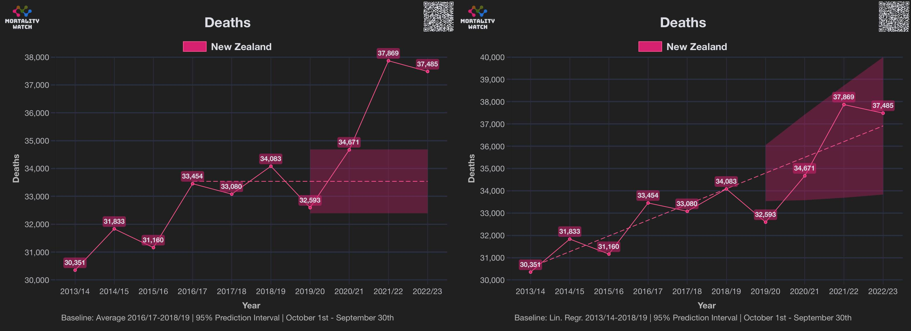
Craig's tweet said: "9,408 excess deaths since Oct 2000. This factors in the size of the population. By this measure mortality had been steady for many years." However her tweet was a bit misleading because the first image in her tweet showed crude mortality rate which had remained flat for several years before COVID, but in the second image in her tweet the figure of 9,408 excess deaths was calculated based on the raw number of deaths, which has been increasing at a fairly sharp rate.
WelcomeTheEagle made an interactive dashboard for browsing the data. [https://www.vaersaware.com/new-zealand] He also made the table below which shows that Young's dataset seems to include almost all of the New Zealand population aged 85 and above, but more than half of the population is missing in age groups 50-54 and below (where the "VAXXED" column shows the number of people included in Young's dataset and not all vaccinated people): [https://twitter.com/welcometheeagle/status/1731965868505276654/]
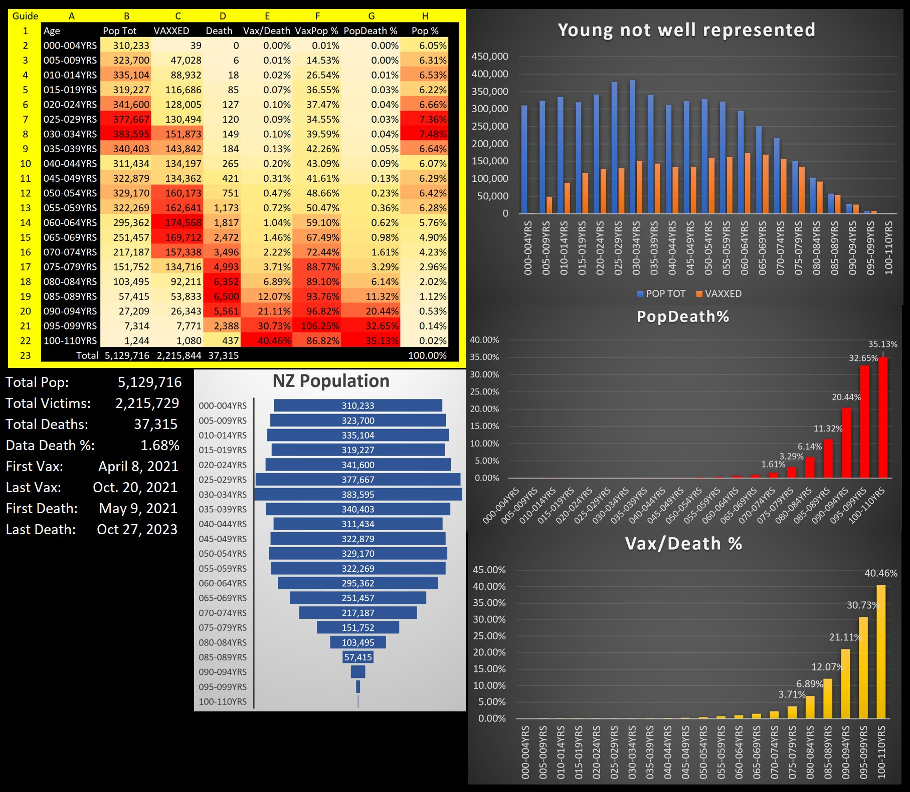
Uncle John Returns calculated monthly ASMR values and compared them to ASMR values from Mortality Watch: [https://twitter.com/UncleJo46902375/status/1732496623123517742]
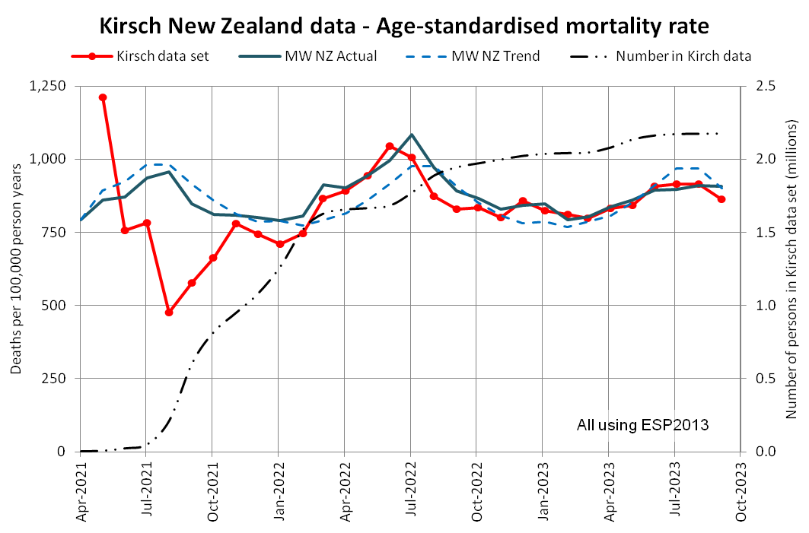
Uncle John Returns also made age-standardized plots for mortality per weeks after vaccination: [https://twitter.com/UncleJo46902375/status/1732770174896329107]
↙️ Kirsch’s all-age mash-up
↘️ Same data but age-standardised

The proportion of old people in the early weeks is much higher since they are getting boosted ~week 26 and circling back to week 0, that's why there are 4.2 million in week 0 declining to 140 thousand by week 10. That's going to really screw up crude mortality rates:

[...]
Looking at crude rates for individual age bands, the early plunge is much more prevalent in the old than in the young and middle-aged:

Uncle John Returns also posted another thread where he demonstrated the problem with using CMR instead of ASMR to calculate deaths by number of weeks since vaccination: [https://twitter.com/UncleJo46902375/status/1733441859848949763]
Simpson's paradox or as I prefer to call it, Kirsch's Conundrum
I have a demo data set loosely based on the NZ data but with 3 broad age bands only
Individual curves A, B and C are fine but when combined there's a scary peak at week 26
Denouement on next post then explanation

For demo purposes, I input the mortality rates and calculated the deaths. I incorporated the healthy vaccinee effect but made no allowance for vaccine-related deaths.
So demo data with absolutely no vaccines deaths can be manipulated to show a big scary peak.
I incorporated the healthy vaccinee effect to get the peak at week 26. Otherwise Curve D would start high and fall progressively. Final rates based on NZ 2015-19.
I took the person numbers directly from a Kirsch NZ spreadsheet.
The proportion of older people falls after week 26 because many are getting boosters and returning to week 0. Older people have far higher mortality rates.
The big drop in total numbers may also be something to do with the NZ data set. It results in erratic rates in the last few weeks.
Don't be fooled, Kirsch almost undoubtedly knows about Simpson's paradox.
He's just hoping you don't.